SD5979 / 原课件 · 中英对照
L04 · 逐页中英对照讲义
04 Σ SD5979 Structured questionnaire design 2026 09 18.pdf · 共 87 页 · 左侧保留老师英文原图与原版式，右侧逐页中文对照，研究课相关词汇已加粗高亮并括号标注原英语。

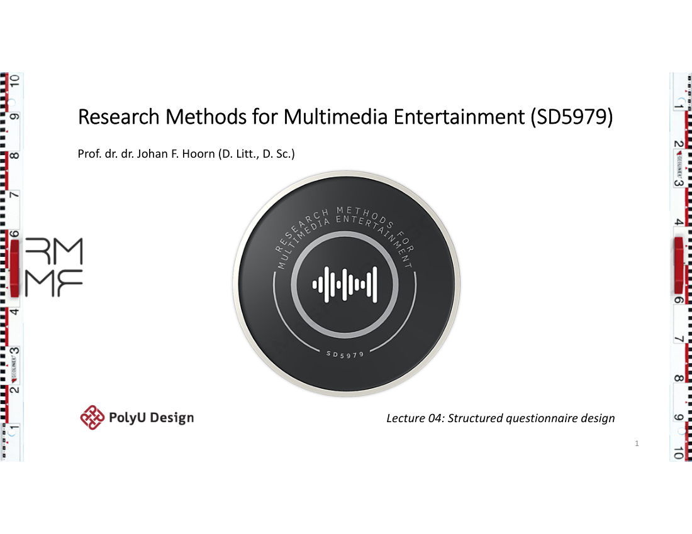
多媒体娱乐研究方法（SD5979）
Prof. dr. dr. Johan F. Hoorn (D. Litt., D. Sc.)
第 04 讲：结构化问卷设计（Structured questionnaire design）
英文检索原文（公式与版式请看左侧原图）
Research Methods for Multimedia Entertainment (SD5979) Prof. dr. dr. Johan F. Hoorn (D. Litt., D. Sc.) Lecture 04: Structured questionnaire design 1

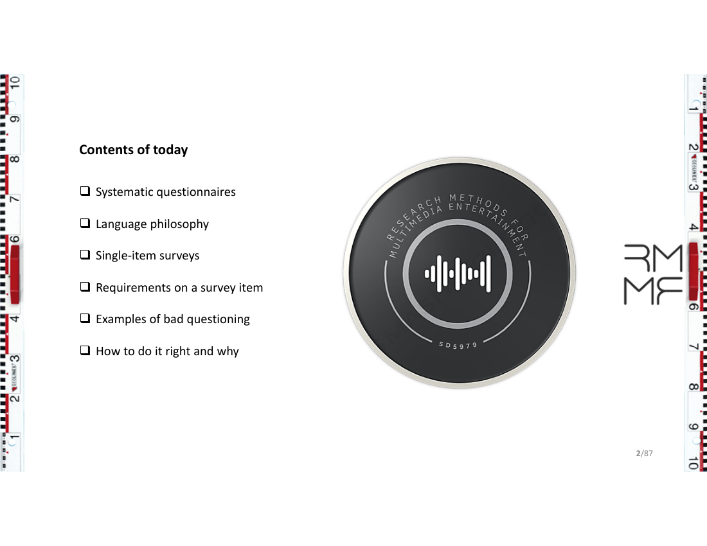
今日内容
- 系统化问卷（Systematic questionnaires）
- 语言哲学（Language philosophy）
- 单题项调查（Single-item surveys）
- 对调查题项的要求（Requirements on a survey item）
- 不当提问的例子（Examples of bad questioning）
- 如何做对以及为什么
英文检索原文（公式与版式请看左侧原图）
2/87 Contents of today Systematic questionnaires Language philosophy Single-item surveys Requirements on a survey item Examples of bad questioning How to do it right and why

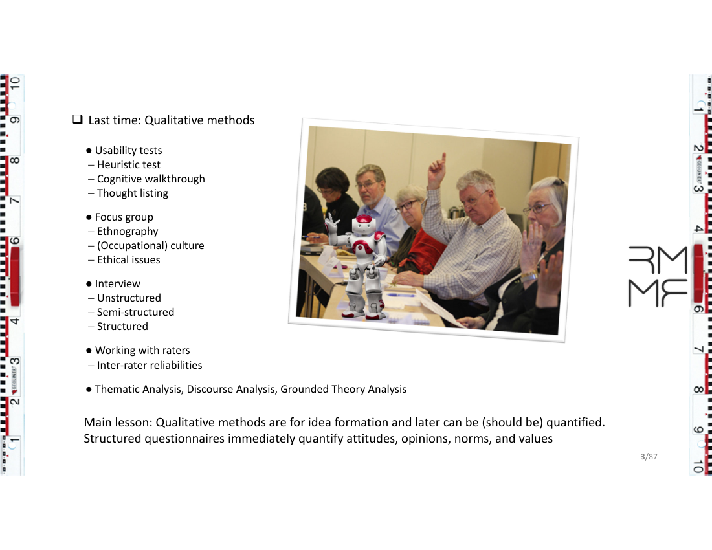
上讲回顾：质性方法（Qualitative methods）
- 可用性测试（Usability tests）
- 启发式测试（Heuristic test）
- 认知走查（Cognitive walkthrough）
- 想法列举（Thought listing）
- 焦点小组（Focus group）
- 民族志（Ethnography）
- （职业）文化（(Occupational) culture）
- 伦理问题（Ethical issues）
- 访谈（Interview）
- 非结构式（Unstructured）
- 半结构式（Semi-structured）
- 结构式（Structured）
- 与评分者协作（Working with raters）
- 评分者间信度（Inter-rater reliabilities）
- 主题分析（Thematic Analysis）、话语分析（Discourse Analysis）、扎根理论分析（Grounded Theory Analysis）
核心结论（Main lesson）：质性方法（Qualitative methods）用于形成想法，之后可以（也应该）被量化（quantified）。结构化问卷（Structured questionnaires）则直接将态度、观点、规范和价值观进行量化（quantify）。
英文检索原文（公式与版式请看左侧原图）
Last time: Qualitative methods ●Usability tests Heuristic test Cognitive walkthrough Thought listing ●Focus group Ethnography (Occupational) culture Ethical issues ●Interview Unstructured Semi-structured Structured ●Working with raters Inter-rater reliabilities ●Thematic Analysis, Discourse Analysis, Grounded Theory Analysis Main lesson: Qualitative methods are for idea formation and later can be (should be) quantified. Structured questionnaires immediately quantify attitudes, opinions, norms, and values 3/87

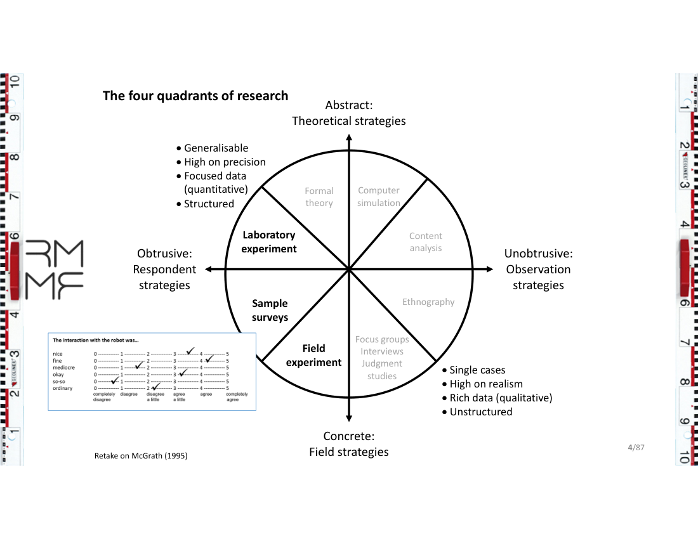
研究的四个象限
- 维度坐标：
- 具体（Concrete）：实地策略（Field strategies） vs. 抽象（Abstract）：理论策略（Theoretical strategies）
- 干预性（Obtrusive）：受访者策略（Respondent strategies） vs. 非干预性（Unobtrusive）：观察策略（Observation strategies）
- 象限内的具体研究策略：
- 实验室实验（Laboratory experiment）
- 抽样调查（Sample surveys）
- 形式理论（Formal theory）
- 计算机模拟（Computer simulation）
- 民族志（Ethnography）
- 内容分析（Content analysis）
- 实地实验（Field experiment）
- 焦点小组（Focus groups）
- 访谈（Interviews）
- 判断研究（Judgment studies）
- 象限特征对比：
- 左侧（具体／实地／非结构化方向）：
- 单个案例（Single cases）
- 高真实性（realism）
- 丰富的数据（质性（qualitative））
- 非结构化（Unstructured）
- 右侧（抽象／普遍／结构化方向）：
- 可推广性（Generalisable）
- 高精确度（precision）
- 聚焦的数据（量化（quantitative））
- 结构化（Structured）
改编自 McGrath (1995)
英文检索原文（公式与版式请看左侧原图）
The four quadrants of research Concrete: Field strategies Abstract: Theoretical strategies Laboratory experiment Sample surveys Obtrusive: Respondent strategies Unobtrusive: Observation strategies Formal theory Computer simulation Ethnography Content analysis Field experiment Focus groups Interviews Judgment studies Single cases High on realism Rich data (qualitative) Unstructured Generalisable High on precision Focused data (quantitative) Structured Retake on McGrath (1995) 4/87

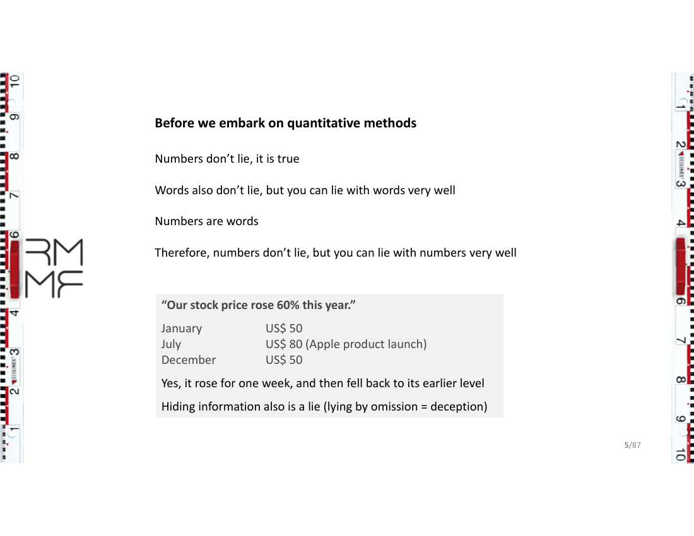
在我们着手学习量化方法（quantitative methods）之前
数字不会说谎，这是真的
词语也不会说谎，但你完全可以用词语来说谎
数字就是词语
因此，数字不会说谎，但你完全可以用数字来说谎
“我们的股价今年上涨了 60%。”
- 1 月：US$ 50
- 7 月：US$ 80（Apple 产品发布）
- 12 月：US$ 50
是的，它上涨了一周，然后又跌回了之前的水平
隐藏信息也是一种谎言（隐瞒式欺骗（lying by omission） = 欺骗）
英文检索原文（公式与版式请看左侧原图）
Numbers don’t lie, it is true Words also don’t lie, but you can lie with words very well Numbers are words Therefore, numbers don’t lie, but you can lie with numbers very well Before we embark on quantitative methods “Our stock price rose 60% this year.” January US$ 50 July US$ 80 (Apple product launch) December US$ 50 Yes, it rose for one week, and then fell back to its earlier level Hiding information also is a lie (lying by omission = deception) 5/87

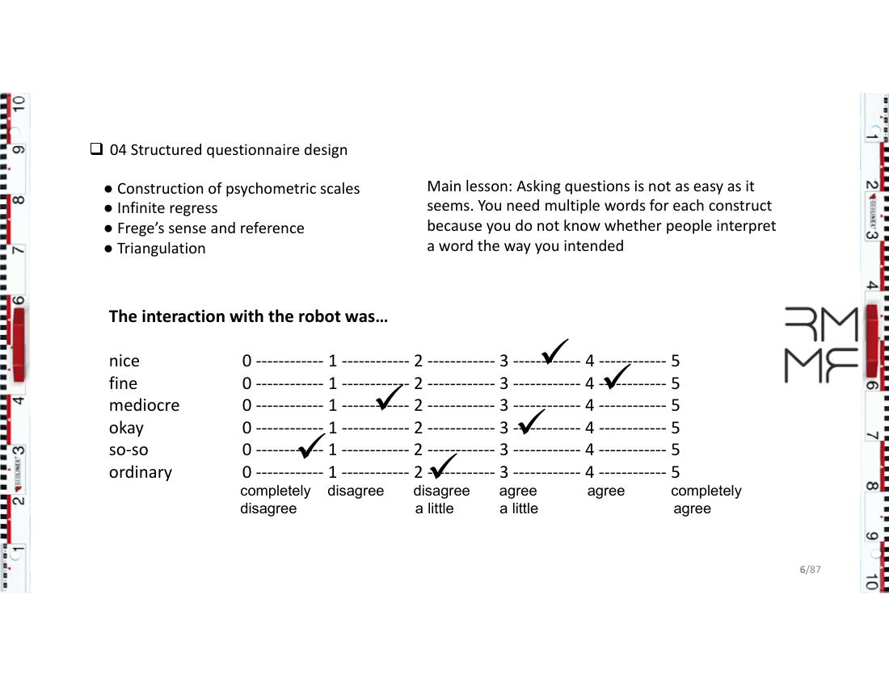
04 结构化问卷设计（Structured questionnaire design）
- 心理测量量表的构建（Construction of psychometric scales）
- 无穷回归（Infinite regress）
- 弗雷格的意义与指称（Frege’s sense and reference）
- 三角互证（Triangulation）
量表（Scale）示例（0–5 刻度：0 完全不同意 completely disagree / 1 不同意 disagree / 2 有一点不同意 disagree a little / 3 有一点同意 agree a little / 4 同意 agree / 5 完全同意 completely agree）：
题干：与机器人的互动是……（The interaction with the robot was…）
- nice（不错的）：0 ------------ 1 ------------ 2 ------------ 3 ------------ 4 ------------ 5 ✓
- fine（挺好的）：0 ------------ 1 ------------ 2 ------------ 3 ------------ 4 ------------ 5 ✓
- mediocre（平庸的）：0 ------------ 1 ------------ 2 ------------ 3 ------------ 4 ------------ 5 ✓
- okay（还行）：0 ------------ 1 ------------ 2 ------------ 3 ------------ 4 ------------ 5 ✓
- so-so（马马虎虎）：0 ------------ 1 ------------ 2 ------------ 3 ------------ 4 ------------ 5 ✓
- ordinary（普通的）：0 ------------ 1 ------------ 2 ------------ 3 ------------ 4 ------------ 5 ✓
核心结论（Main lesson）：提问并不像看起来那么简单。你需要为每个构念（construct）使用多个词语，因为你无法确定人们是否会按照你原本的意图来理解某一个词。
英文检索原文（公式与版式请看左侧原图）
completely disagree disagree agree agree completely disagree a little a little agree The interaction with the robot was… nice 0 ------------ 1 ------------ 2 ------------ 3 ------------ 4 ------------ 5 fine 0 ------------ 1 ------------ 2 ------------ 3 ------------ 4 ------------ 5 mediocre 0 ------------ 1 ------------ 2 ------------ 3 ------------ 4 ------------ 5 okay 0 ------------ 1 ------------ 2 ------------ 3 ------------ 4 ------------ 5 so-so 0 ------------ 1 ------------ 2 ------------ 3 ------------ 4 ------------ 5 ordinary 0 ------------ 1 ------------ 2 ------------ 3 ------------ 4 ------------ 5 04 Structured questionnaire design ●Construction of psychometric scales ●Infinite regress ●Frege’s sense and reference ●Triangulation Main lesson: Asking questions is not as easy as it seems. You need multiple words for each construct because you do not know whether people interpret a word the way you intended 6/87

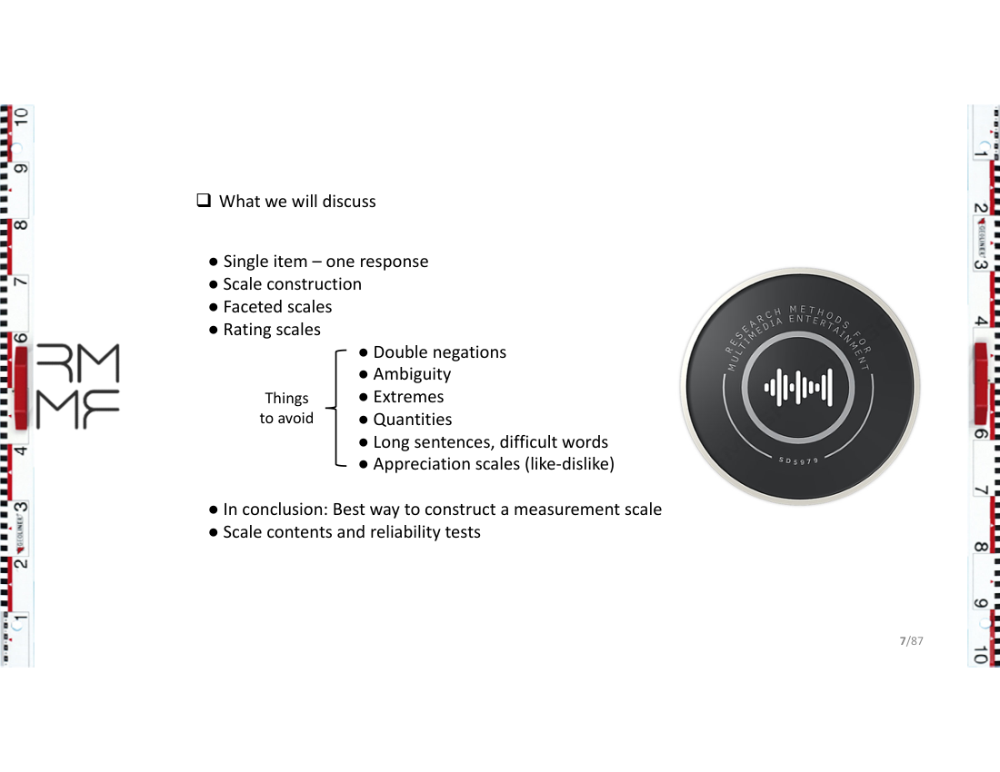
我们将讨论的内容
- 单题项—单一作答（Single item – one response）
- 量表构建（Scale construction）
- 分面量表（Faceted scales）
- 评定量表（Rating scales）
- 需要避免的问题（Things to avoid）：
- 双重否定（Double negations）
- 歧义（Ambiguity）
- 极端表述（Extremes）
- 数量表述（Quantities）
- 长句与难词（Long sentences, difficult words）
- 评价量表（Appreciation scales）（喜欢—不喜欢，like-dislike）
- 总结：构建测量量表（measurement scale）的最佳方式
- 量表内容（Scale contents）与信度检验（reliability tests）
英文检索原文（公式与版式请看左侧原图）
●Single item – one response ●Scale construction ●Faceted scales ●Rating scales ●Double negations ●Ambiguity ●Extremes ●Quantities ●Long sentences, difficult words ●Appreciation scales (like-dislike) ●In conclusion: Best way to construct a measurement scale ●Scale contents and reliability tests What we will discuss Things to avoid 7/87

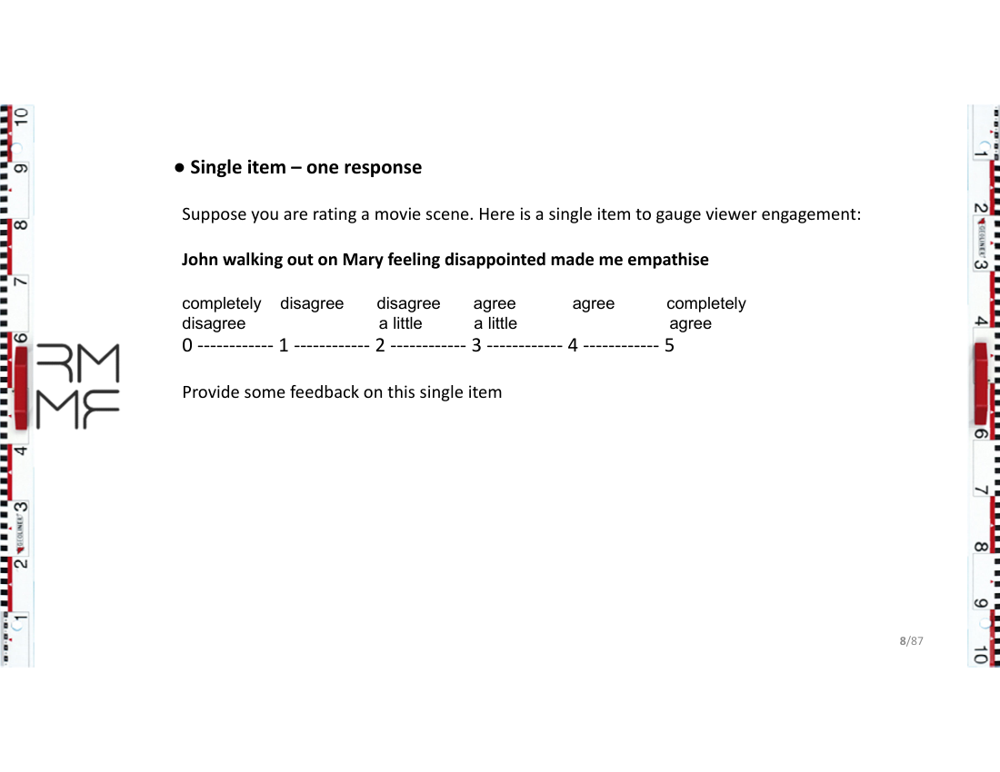
单题项—单一作答（Single item – one response）
假设你正在评价一个电影场景。下面是一个用于衡量观众投入度（engagement）的单题项（single item）：
“John walking out on Mary feeling disappointed made me empathise”（“John 失望地甩手离开 Mary，这让我产生了共情”）
- 刻度标签：0 完全不同意（completely disagree） / 1 不同意（disagree） / 2 有一点不同意（disagree a little） / 3 有一点同意（agree a little） / 4 同意（agree） / 5 完全同意（completely agree）
- 0 ------------ 1 ------------ 2 ------------ 3 ------------ 4 ------------ 5
请对这个单题项（single item）提出一些反馈意见。
英文检索原文（公式与版式请看左侧原图）
●Single item – one response Suppose you are rating a movie scene. Here is a single item to gauge viewer engagement: John walking out on Mary feeling disappointed made me empathise completely disagree disagree agree agree completely disagree a little a little agree 0 ------------ 1 ------------ 2 ------------ 3 ------------ 4 ------------ 5 Provide some feedback on this single item 8/87

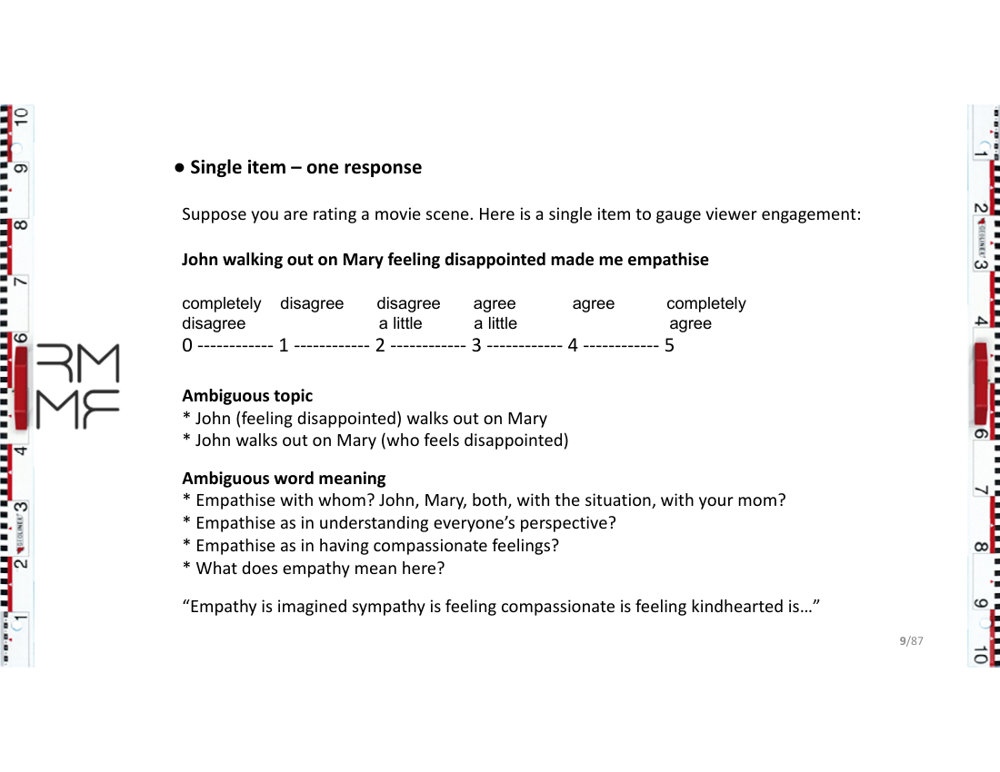
单题项—单一作答（Single item – one response）
假设你正在评价一个电影场景。下面是一个用于衡量观众投入度（engagement）的单题项（single item）：
“John walking out on Mary feeling disappointed made me empathise”（“John 失望地甩手离开 Mary，这让我产生了共情”）
- 刻度标签：0 完全不同意（completely disagree） / 1 不同意（disagree） / 2 有一点不同意（disagree a little） / 3 有一点同意（agree a little） / 4 同意（agree） / 5 完全同意（completely agree）
- 0 ------------ 1 ------------ 2 ------------ 3 ------------ 4 ------------ 5
- 主题歧义（Ambiguous topic）
- John（感到失望）甩手离开 Mary
- John 甩手离开 Mary（感到失望的是 Mary）
- 词义歧义（Ambiguous word meaning）
- 与谁共情？John、Mary、两人都有、对这个处境，还是对你的妈妈？
- 共情是指理解每个人的视角吗？
- 共情是指产生怜悯／同情之情吗？
- 这里的“共情（empathy）”到底是什么意思？
“共情是想象中的同情，是感到怜悯，是感到仁慈善良，是……”
英文检索原文（公式与版式请看左侧原图）
●Single item – one response Suppose you are rating a movie scene. Here is a single item to gauge viewer engagement: John walking out on Mary feeling disappointed made me empathise completely disagree disagree agree agree completely disagree a little a little agree 0 ------------ 1 ------------ 2 ------------ 3 ------------ 4 ------------ 5 Ambiguous topic * John (feeling disappointed) walks out on Mary * John walks out on Mary (who feels disappointed) Ambiguous word meaning * Empathise with whom? John, Mary, both, with the situation, with your mom? * Empathise as in understanding everyone’s perspective? * Empathise as in having compassionate feelings? * What does empathy mean here? “Empathy is imagined sympathy is feeling compassionate is feeling kindhearted is…” 9/87

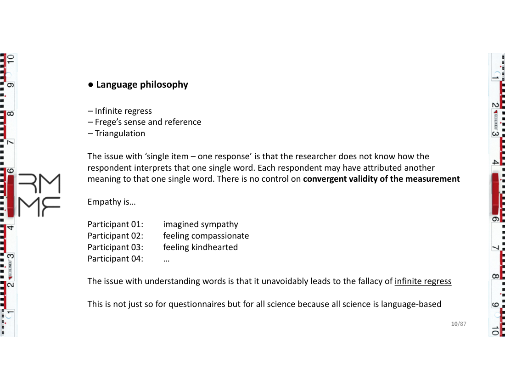
语言哲学（Language philosophy）
- 无穷回归（Infinite regress）
- 弗雷格的意义与指称（Frege’s sense and reference）
- 三角互证（Triangulation）
共情（Empathy）是……
- 参与者 01（Participant 01）：想象中的同情（imagined sympathy）
- 参与者 02（Participant 02）：感到怜悯（feeling compassionate）
- 参与者 03（Participant 03）：感到仁慈善良（feeling kindhearted）
- 参与者 04（Participant 04）：……
理解词语的问题在于，它不可避免地会导致无穷回归谬误（fallacy of infinite regress）。
这不仅适用于问卷调查，也适用于所有科学，因为所有科学都是以语言为基础的。
“单题项—单一作答（single item – one response）”的问题在于，研究者并不知道受访者（respondent）是如何解释那单一词语的。每位受访者（respondent）都可能为这同一个词赋予了不同的含义。因此，无法对测量（measurement）的聚合效度（convergent validity）进行控制。
英文检索原文（公式与版式请看左侧原图）
●Language philosophy – Infinite regress – Frege’s sense and reference – Triangulation Empathy is… Participant 01: imagined sympathy Participant 02: feeling compassionate Participant 03: feeling kindhearted Participant 04: … The issue with understanding words is that it unavoidably leads to the fallacy of infinite regress This is not just so for questionnaires but for all science because all science is language-based The issue with ‘single item – one response’ is that the researcher does not know how the respondent interprets that one single word. Each respondent may have attributed another meaning to that one single word. There is no control on convergent validity of the measurement 10/87

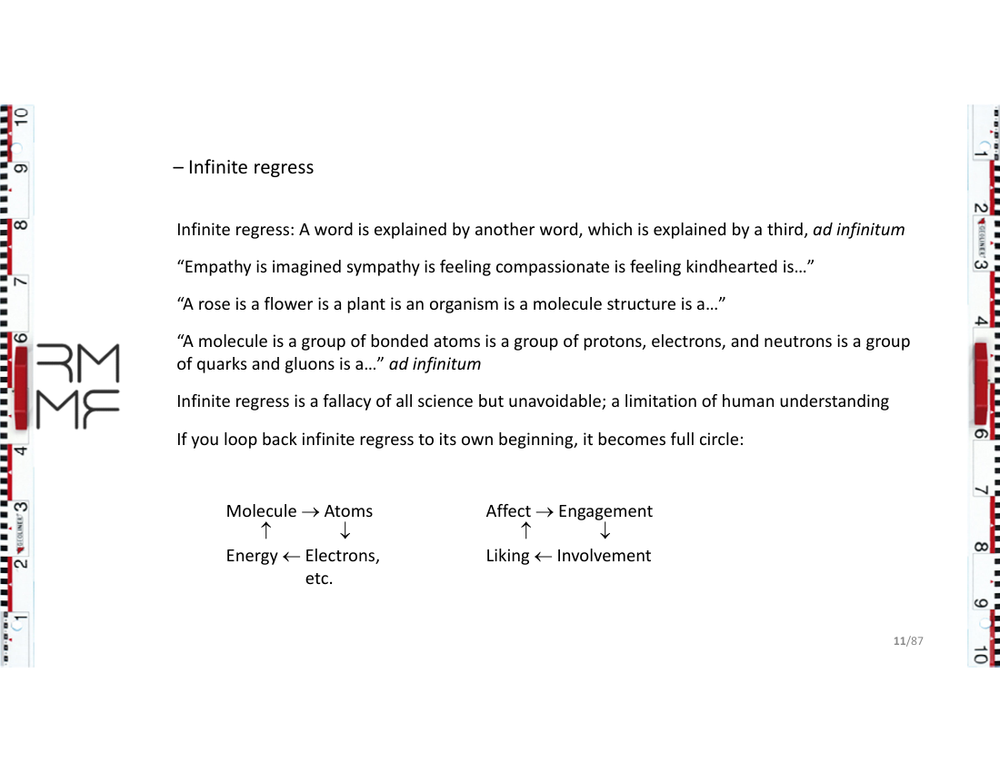
无穷回归（Infinite regress）
无穷回归（Infinite regress）：一个词由另一个词来解释，而那个词又由第三个词来解释，如此以至无穷（ad infinitum）。
“共情是想象中的同情，是感到怜悯，是感到仁慈善良，是……”
“玫瑰是一种花，是一种植物，是一种有机体，是一种分子结构，是一种……”
“分子是一组键合的原子，是一组质子、电子和中子，是一组夸克和胶子，是一种……”以至无穷（ad infinitum）。
无穷回归（Infinite regress）是所有科学的一种谬误（fallacy），但又不可避免；它是人类理解能力的局限。
如果你把无穷回归（infinite regress）绕回它自身的起点，它就变成了一个首尾相连的闭环（full circle）：
- 分子（Molecule）→ 原子（Atoms）→ 电子等（Electrons, etc.）→ 能量（Energy）→（回到分子）
- 情感（Affect） → 投入度（Engagement） → 卷入度（Involvement） → 喜爱度（Liking） →（回到情感）
英文检索原文（公式与版式请看左侧原图）
– Infinite regress Infinite regress: A word is explained by another word, which is explained by a third, ad infinitum “Empathy is imagined sympathy is feeling compassionate is feeling kindhearted is…” “A rose is a flower is a plant is an organism is a molecule structure is a…” “A molecule is a group of bonded atoms is a group of protons, electrons, and neutrons is a group of quarks and gluons is a…” ad infinitum Infinite regress is a fallacy of all science but unavoidable; a limitation of human understanding If you loop back infinite regress to its own beginning, it becomes full circle: Molecule Atoms Energy Electrons, etc. Affect Engagement Liking Involvement 11/87

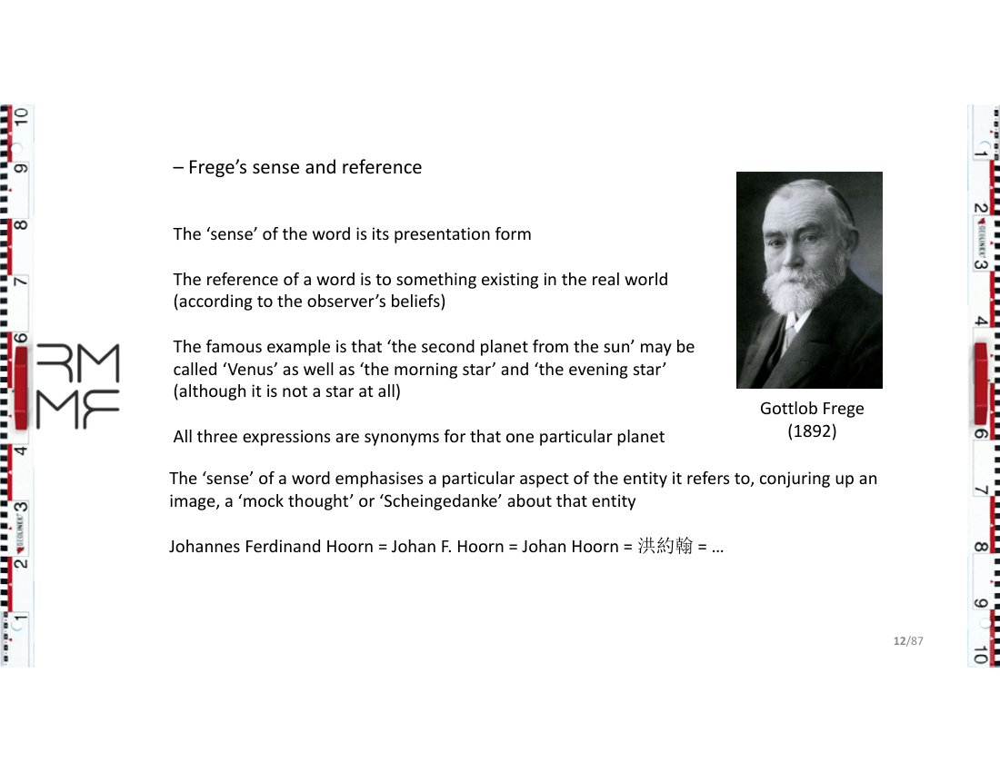
弗雷格的意义与指称（Frege’s sense and reference）
Gottlob Frege (1892)
词语的“意义（sense）”是它的呈现形式（presentation form）。
词语的“指称（reference）”指向现实世界中存在的某个事物（根据观察者的信念）。
著名的例子是：“太阳系的第二颗行星”既可以被称为“金星（Venus）”，也可以被称为“晨星（the morning star）”和“昏星（the evening star）”（尽管它根本不是一颗恒星）。
这三个表达都是指代那一颗特定行星的同义词。
一个词的“意义（sense）”会强调其所指称实体的某一个特定方面，从而唤起关于该实体的某种意象、一种“假想思维（mock thought）”或“假象思想（Scheingedanke）”。
Johannes Ferdinand Hoorn = Johan F. Hoorn = Johan Hoorn = 洪約翰 = …
英文检索原文（公式与版式请看左侧原图）
– Frege’s sense and reference Gottlob Frege (1892) The ‘sense’ of the word is its presentation form The reference of a word is to something existing in the real world (according to the observer’s beliefs) The famous example is that ‘the second planet from the sun’ may be called ‘Venus’ as well as ‘the morning star’ and ‘the evening star’ (although it is not a star at all) All three expressions are synonyms for that one particular planet The ‘sense’ of a word emphasises a particular aspect of the entity it refers to, conjuring up an image, a ‘mock thought’ or ‘Scheingedanke’ about that entity Johannes Ferdinand Hoorn = Johan F. Hoorn = Johan Hoorn = 洪約翰= … 12/87

弗雷格的意义与指称（Frege’s sense and reference）
Gottlob Frege (1892)
- 多个近义词共同环绕核心概念：
- 同情（sympathy）
- 仁慈（kindness）
- 怜悯（compassion）
- 以及更多其他词语（and many more）
- 指向核心概念：共情（Empathy）
但是……这仍然存在无穷回归（infinite regress），因为究竟什么是共情（empathy）？
如何从其他词语中得知一个词的指称（reference）？
英文检索原文（公式与版式请看左侧原图）
– Frege’s sense and reference Gottlob Frege (1892) sympathy kindness compas- sion and many more Empathy But... infinite regress, because what is empathy? How to know the reference of a word from other words? 13/87

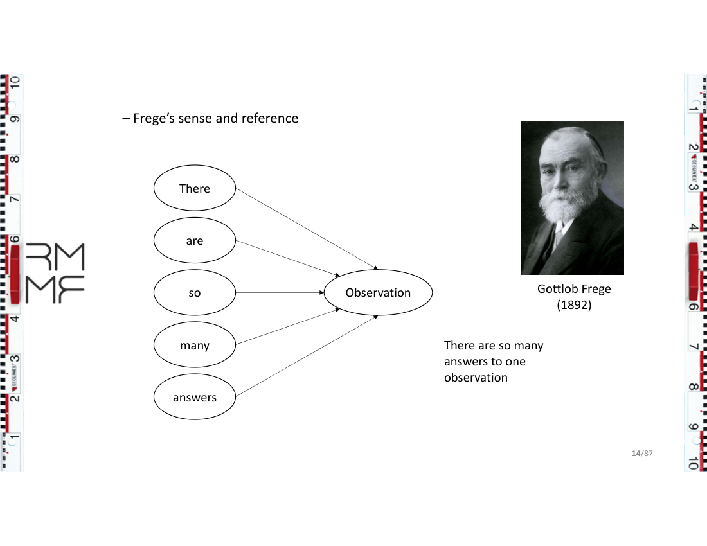
– 弗雷格的意义与指称（Frege’s sense and reference）
Gottlob Frege (1892)
- 有这么多的答案（There are so many answers）
- 观察（Observation）
- 对同一项观察（observation）存在如此多的答案
英文检索原文（公式与版式请看左侧原图）
– Frege’s sense and reference Gottlob Frege (1892) There are so many answers Observation There are so many answers to one observation 14/87

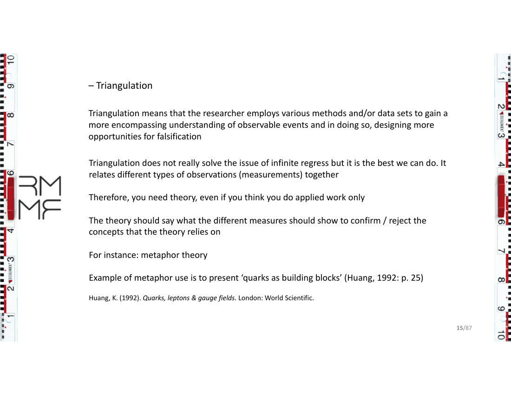
– 三角互证（Triangulation）
- 三角互证（Triangulation）并不能真正解决无穷回归（infinite regress）的问题，但它是我们能做到的最佳方案。它将不同类型的观察（observations）（测量（measurements））联系在一起
- 因此，即使你认为自己只做应用工作，你仍然需要理论（theory）
- 理论（theory）应当指明：不同的测量指标（measures）需要呈现何种结果，才能证实（confirm）或拒绝（reject）该理论（theory）所依赖的概念（concepts）
- 例如：隐喻理论（metaphor theory）
- 隐喻使用的一个例子是将「夸克」表述为「基本构件」（‘quarks as building blocks’，Huang, 1992: p. 25）
- 三角互证（Triangulation）是指研究者采用多种研究方法（methods）和／或数据集（data sets），以对可观察事件（observable events）获得更全面的理解，并在此过程中创造更多用于证伪（falsification）的机会
Huang, K. (1992). Quarks, leptons & gauge fields. London: World Scientific.
英文检索原文（公式与版式请看左侧原图）
– Triangulation Triangulation does not really solve the issue of infinite regress but it is the best we can do. It relates different types of observations (measurements) together Therefore, you need theory, even if you think you do applied work only The theory should say what the different measures should show to confirm / reject the concepts that the theory relies on For instance: metaphor theory Example of metaphor use is to present ‘quarks as building blocks’ (Huang, 1992: p. 25) Triangulation means that the researcher employs various methods and/or data sets to gain a more encompassing understanding of observable events and in doing so, designing more opportunities for falsification Huang, K. (1992). Quarks, leptons & gauge fields. London: World Scientific. 15/87

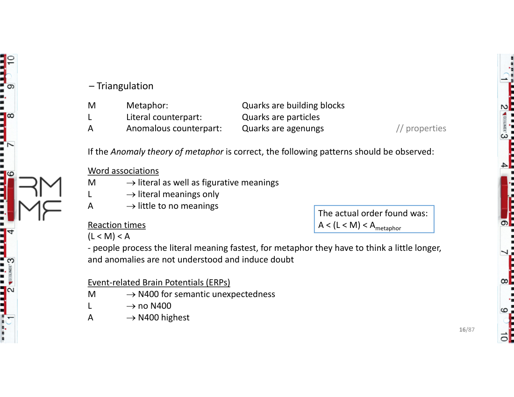
– 三角互证（Triangulation）
- M — 隐喻（Metaphor）：夸克是基本构件（Quarks are building blocks）
- L — 字面对应项（Literal counterpart）：夸克是粒子（Quarks are particles）
- A — 异常对应项（Anomalous counterpart）：夸克是 agenungs（Quarks are agenungs）
// 属性（properties）
如果隐喻的异常理论（Anomaly theory of metaphor）是正确的，应当能观察到以下模式：
- 词汇联想（Word associations）
- M → 字面义以及比喻义（literal as well as figurative meanings）
- L → 仅字面义（literal meanings only）
- A → 几乎没有或完全没有意义（little to no meanings）
- 反应时（Reaction times）
- (L < M) < A
- 人们加工字面义的速度最快，对于隐喻则需要多思考一会儿，而异常表达无法被理解并会引发疑惑
- 事件相关脑电位（Event-related Brain Potentials, ERPs）
- M → 因语义非预期性出现 N400
- L → 无 N400
- A → N400 最高
实际发现的顺序为：
A < (L < M) < Ametaphor
英文检索原文（公式与版式请看左侧原图）
– Triangulation M Metaphor: Quarks are building blocks L Literal counterpart: Quarks are particles A Anomalous counterpart: Quarks are agenungs // properties If the Anomaly theory of metaphor is correct, the following patterns should be observed: Word associations M literal as well as figurative meanings L literal meanings only A little to no meanings Reaction times (L < M) < A - people process the literal meaning fastest, for metaphor they have to think a little longer, and anomalies are not understood and induce doubt Event-related Brain Potentials (ERPs) M N400 for semantic unexpectedness L no N400 A N400 highest The actual order found was: A < (L < M) < Ametaphor 16/87

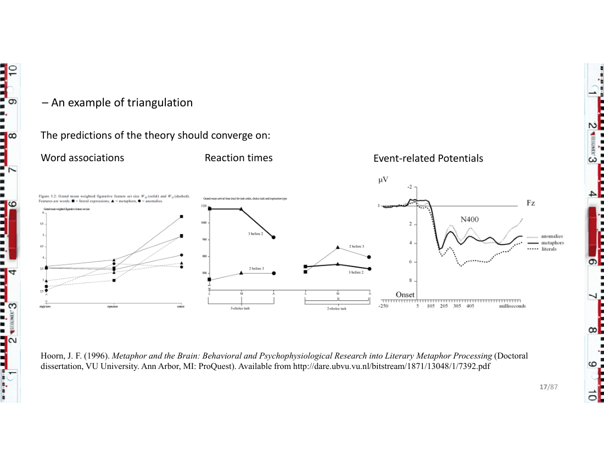
– 三角互证（triangulation）示例（An example of triangulation）
该理论（theory）的预测应当收敛于：
- 词汇联想（Word associations）
- 反应时（Reaction times）
- 事件相关电位（Event-related Potentials）
Hoorn, J. F. (1996). Metaphor and the Brain: Behavioral and Psychophysiological Research into Literary Metaphor Processing (Doctoral dissertation, VU University. Ann Arbor, MI: ProQuest). Available from http://dare.ubvu.vu.nl/bitstream/1871/13048/1/7392.pdf
英文检索原文（公式与版式请看左侧原图）
Hoorn, J. F. (1996). Metaphor and the Brain: Behavioral and Psychophysiological Research into Literary Metaphor Processing (Doctoral dissertation, VU University. Ann Arbor, MI: ProQuest). Available from http://dare.ubvu.vu.nl/bitstream/1871/13048/1/7392.pdf – An example of triangulation Word associations Reaction times Event-related Potentials The predictions of the theory should converge on: 17/87

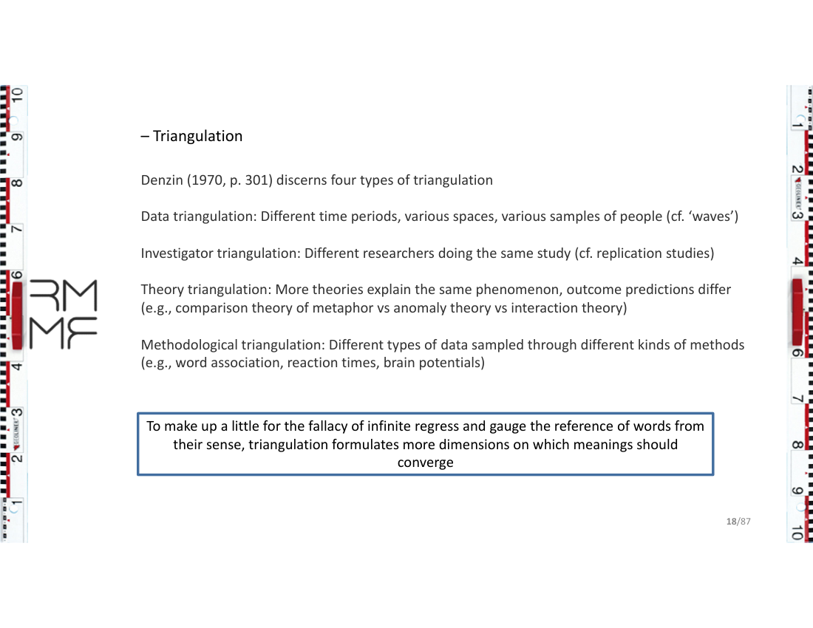
– 三角互证（Triangulation）
Denzin (1970, p. 301) 区分了四种类型的三角互证（triangulation）：
- 数据三角互证（Data triangulation）：不同的时间段、不同的空间、不同的受访人群样本（samples）（参见「调查波次（waves）」）
- 研究者三角互证（Investigator triangulation）：由不同的研究者开展同一项研究（参见重复研究（replication studies））
- 理论三角互证（Theory triangulation）：多个理论（theories）解释同一现象，其结果预测各不相同（例如：隐喻的比较理论 vs 异常理论 vs 互动理论）
- 方法论三角互证（Methodological triangulation）：通过不同种类的研究方法（methods）采集不同类型的数据（例如：词汇联想（word association）、反应时（reaction times）、脑电位（brain potentials））
为了在一定程度上弥补无穷回归谬误（fallacy of infinite regress），并从词语的意义（sense）中推估其指称（reference），三角互证（triangulation）构建了更多应使意义发生收敛的维度（dimensions）。
英文检索原文（公式与版式请看左侧原图）
Denzin (1970, p. 301) discerns four types of triangulation Data triangulation: Different time periods, various spaces, various samples of people (cf. ‘waves’) Investigator triangulation: Different researchers doing the same study (cf. replication studies) Theory triangulation: More theories explain the same phenomenon, outcome predictions differ (e.g., comparison theory of metaphor vs anomaly theory vs interaction theory) Methodological triangulation: Different types of data sampled through different kinds of methods (e.g., word association, reaction times, brain potentials) – Triangulation To make up a little for the fallacy of infinite regress and gauge the reference of words from their sense, triangulation formulates more dimensions on which meanings should converge 18/87

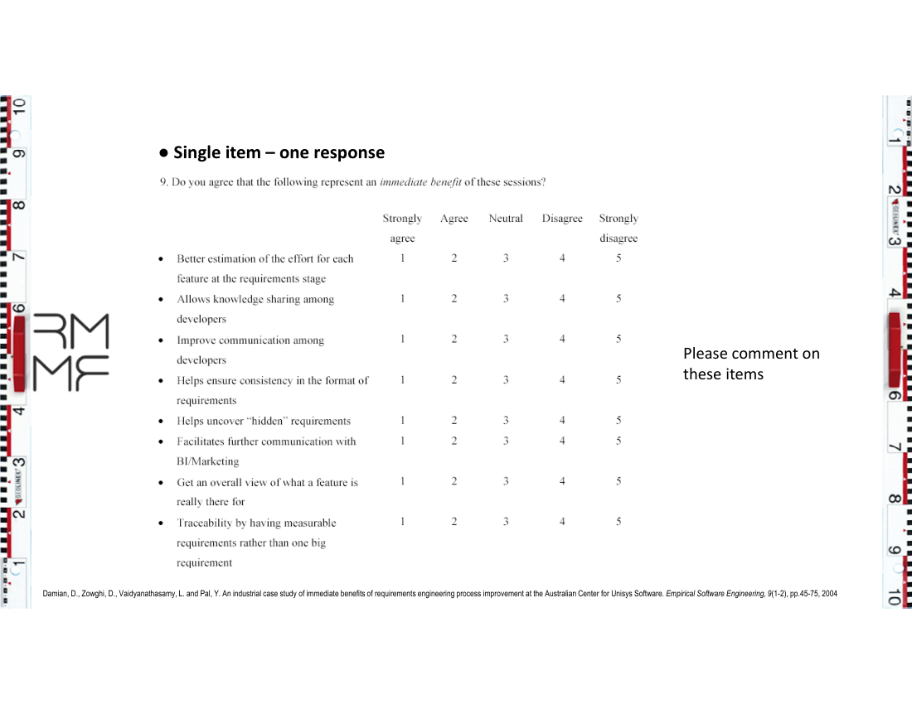
● 单题项（Single item） – 单一作答（one response）
请对这些题项（items）进行评价
Damian, D., Zowghi, D., Vaidyanathasamy, L. and Pal, Y. An industrial case study of immediate benefits of requirements engineering process improvement at the Australian Center for Unisys Software. Empirical Software Engineering, 9(1-2), pp.45-75, 2004
英文检索原文（公式与版式请看左侧原图）
●Single item – one response Damian, D., Zowghi, D., Vaidyanathasamy, L. and Pal, Y. An industrial case study of immediate benefits of requirements engineering process improvement at the Australian Center for Unisys Software. Empirical Software Engineering, 9(1-2), pp.45-75, 2004 Please comment on these items

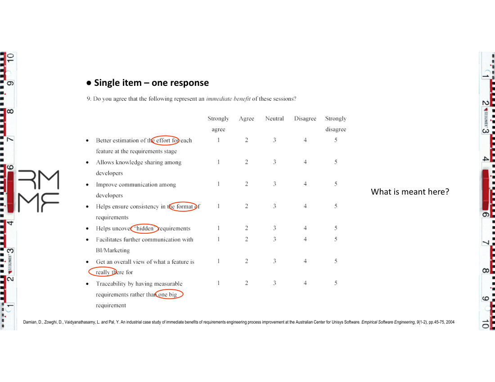
● 单题项（Single item） – 单一作答（one response）
这里是什么意思？
Damian, D., Zowghi, D., Vaidyanathasamy, L. and Pal, Y. An industrial case study of immediate benefits of requirements engineering process improvement at the Australian Center for Unisys Software. Empirical Software Engineering, 9(1-2), pp.45-75, 2004
英文检索原文（公式与版式请看左侧原图）
●Single item – one response Damian, D., Zowghi, D., Vaidyanathasamy, L. and Pal, Y. An industrial case study of immediate benefits of requirements engineering process improvement at the Australian Center for Unisys Software. Empirical Software Engineering, 9(1-2), pp.45-75, 2004 What is meant here?

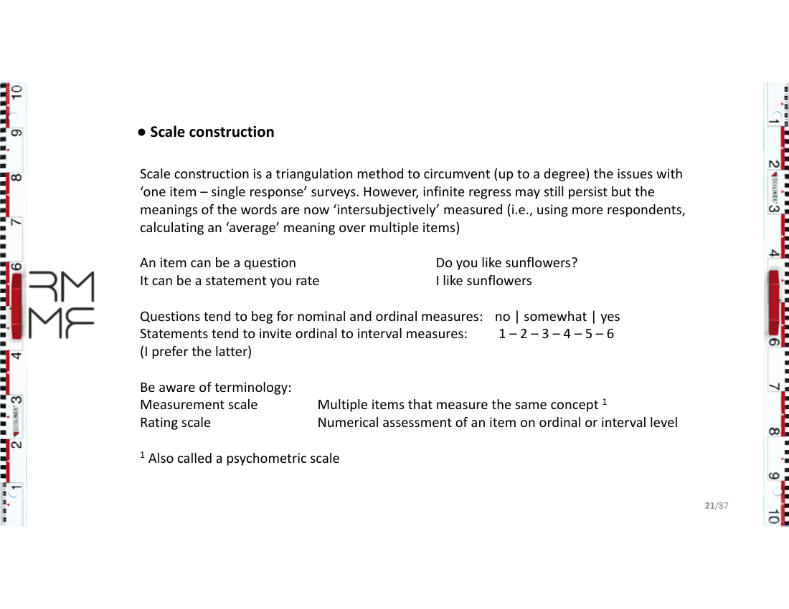
● 量表构建（Scale construction）
量表构建（Scale construction）是一种三角互证（triangulation）方法，用于（在一定程度上）规避「单题项—单一作答（one item – single response）」问卷调查（surveys）所存在的问题。然而，无穷回归（infinite regress）仍可能存在，但词语的意义现在是通过「主体间性（intersubjectively）」的方式进行测量（measured）的（即：使用更多受访者（respondents），并对多个题项（multiple items）计算出一个「平均」意义）。
- 一个题项（item）可以是一个问题：
- 你喜欢向日葵吗？（Do you like sunflowers?）
- 它也可以是一个供你评分的陈述句（statement）：
- 我喜欢向日葵（I like sunflowers）
- 问题往往倾向于引出名义测量（nominal）和顺序测量（ordinal measures）：否（no） | 有点（somewhat） | 是（yes）
- 陈述句（Statements）往往倾向于引导至顺序测量（ordinal）到等距测量（interval measures）：
- 1 – 2 – 3 – 4 – 5 – 6
- （我更偏爱后者）
注意术语区分：
- 测量量表（Measurement scale）：测量同一概念（concept）的多个题项（Multiple items） ^1
- 评定量表（Rating scale）：在顺序水平（ordinal）或等距水平（interval level）上对某一题项（item）进行的数值评估
^1 也称为心理测量量表（psychometric scale）
英文检索原文（公式与版式请看左侧原图）
●Scale construction Scale construction is a triangulation method to circumvent (up to a degree) the issues with ‘one item – single response’ surveys. However, infinite regress may still persist but the meanings of the words are now ‘intersubjectively’ measured (i.e., using more respondents, calculating an ‘average’ meaning over multiple items) An item can be a question Do you like sunflowers? It can be a statement you rate I like sunflowers Questions tend to beg for nominal and ordinal measures: no | somewhat | yes Statements tend to invite ordinal to interval measures: 1 – 2 – 3 – 4 – 5 – 6 (I prefer the latter) Be aware of terminology: Measurement scale Multiple items that measure the same concept 1 Rating scale Numerical assessment of an item on ordinal or interval level 1 Also called a psychometric scale 21/87

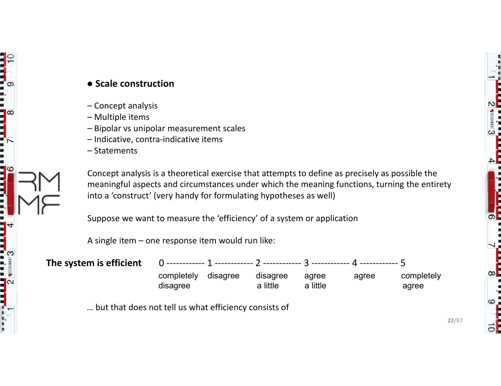
● 量表构建（Scale construction）
- 概念分析（Concept analysis）
- 多题项（Multiple items）
- 双极与单极测量量表（Bipolar vs unipolar measurement scales）
- 指示题项（Indicative）、反指示题项（contra-indicative items）
- 陈述句（Statements）
概念分析（Concept analysis）是一项理论工作，旨在尽可能精确地界定该意义的各个方面以及该意义起作用的情境条件，从而将整体转化为一个「构念（construct）」（这对于提出假设（formulating hypotheses）也非常有用）。
假设我们想要测量某个系统或应用程序的「效率（efficiency）」。
一个单题项—单一作答（single item – one response）的题项（item）会是这样：
该系统是高效的（The system is efficient）
0（完全不同意 / completely disagree） ------------ 1（不同意 / disagree） ------------ 2（有点不同意 / disagree a little） ------------ 3（有点同意 / agree a little） ------------ 4（同意 / agree） ------------ 5（完全同意 / completely agree）
……但这并没有告诉我们效率是由什么构成的。
英文检索原文（公式与版式请看左侧原图）
●Scale construction – Concept analysis – Multiple items – Bipolar vs unipolar measurement scales – Indicative, contra-indicative items – Statements Concept analysis is a theoretical exercise that attempts to define as precisely as possible the meaningful aspects and circumstances under which the meaning functions, turning the entirety into a ‘construct’ (very handy for formulating hypotheses as well) Suppose we want to measure the ‘efficiency’ of a system or application A single item – one response item would run like: completely disagree disagree agree agree completely disagree a little a little agree The system is efficient 0 ------------ 1 ------------ 2 ------------ 3 ------------ 4 ------------ 5 … but that does not tell us what efficiency consists of 22/87

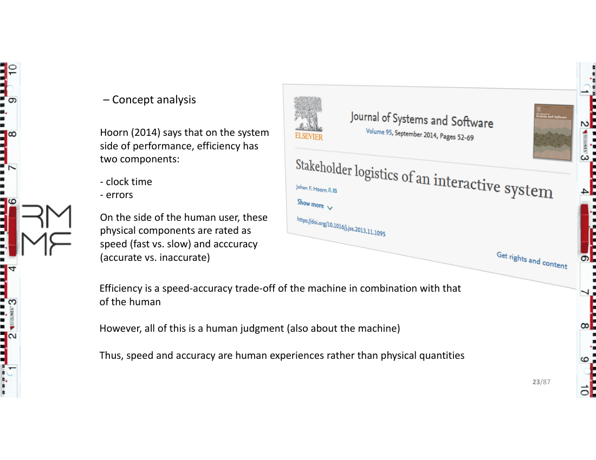
– 概念分析（Concept analysis）
Hoorn (2014) 指出，在性能（performance）的系统一侧，效率（efficiency）包含两个组成部分：
- 时钟时间（clock time）
- 错误数（errors）
在人类用户一侧，这些物理成分被评定为速度（快 vs. 慢）和准确性（准确 vs. 不准确）。
效率是机器的速度—准确性权衡（speed-accuracy trade-off）与人类自身的速度—准确性权衡（speed-accuracy trade-off）相结合的结果。
然而，所有这些本质上都是人类的主观判断（包括对机器的判断）。
因此，速度和准确性是人类的体验，而非物理量（physical quantities）。
英文检索原文（公式与版式请看左侧原图）
– Concept analysis Hoorn (2014) says that on the system side of performance, efficiency has two components: - clock time - errors On the side of the human user, these physical components are rated as speed (fast vs. slow) and acccuracy (accurate vs. inaccurate) Efficiency is a speed-accuracy trade-off of the machine in combination with that of the human However, all of this is a human judgment (also about the machine) Thus, speed and accuracy are human experiences rather than physical quantities 23/87

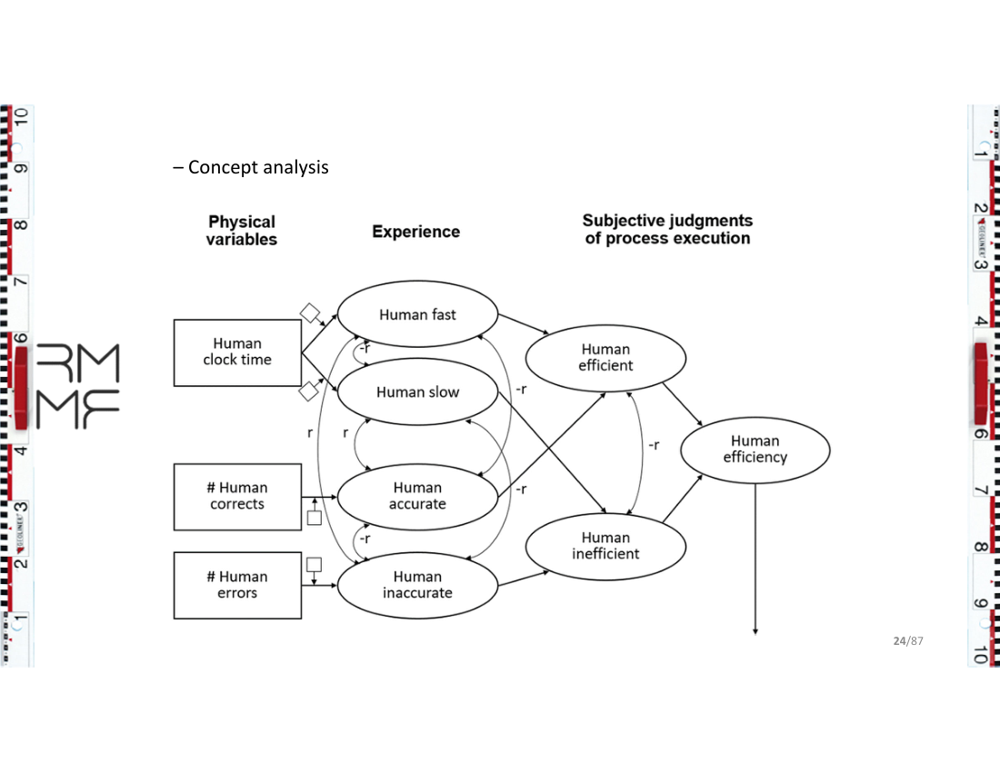
– 概念分析（Concept analysis）
图示分为三栏，展示了物理变量（Physical variables）、体验（Experience）与主观判断（Subjective judgments）（对过程执行的主观判断，Subjective judgments of process execution）之间的结构关系：
- 物理变量（Physical variables）（矩形框）：
- 人类时钟时间（Human clock time）→ 分别指向「人类觉得快（Human fast）」与「人类觉得慢（Human slow）」
- 人类正确次数（# Human corrects）→ 指向「人类觉得准确（Human accurate）」
- 人类错误次数（# Human errors）→ 指向「人类觉得不准确（Human inaccurate）」
- 体验（Experience，椭圆框）：
- 人类觉得快（Human fast）→ 指向「人类觉得高效（Human efficient）」
- 人类觉得慢（Human slow）→ 指向「人类觉得低效（Human inefficient）」
- 人类觉得准确（Human accurate）→ 指向「人类觉得高效（Human efficient）」
- 人类觉得不准确（Human inaccurate）→ 指向「人类觉得低效（Human inefficient）」
- 对过程执行的主观判断（Subjective judgments）（Subjective judgments of process execution，椭圆框）：
- 人类觉得高效（Human efficient）→ 指向「人类效率（Human efficiency）」
- 人类觉得低效（Human inefficient）→ 指向「人类效率（Human efficiency）」
- 人类效率（Human efficiency）→ 向下引出输出箭头
- 变量间相关（r）关系（双向曲线箭头标注）：
- Human fast ↔ Human slow：负相关 -r（-r）
- Human fast ↔ Human inaccurate：相关 r（r）
- Human slow ↔ Human accurate：相关 r（r）
- Human fast ↔ Human accurate：负相关 -r（-r）
- Human slow ↔ Human inaccurate：负相关 -r（-r）
- Human accurate ↔ Human inaccurate：负相关 -r（-r）
- Human efficient ↔ Human inefficient：负相关 -r（-r）
英文检索原文（公式与版式请看左侧原图）
– Concept analysis 24/87

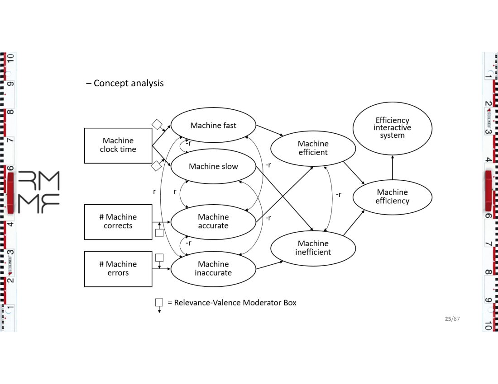
– 概念分析（Concept analysis）
- 左侧输入指标（方框）：
- 机器时钟时间（Machine clock time）
- 机器正确次数（# Machine corrects）
- 机器错误次数（# Machine errors）
- 中左层概念（椭圆）：
- 机器速度快（Machine fast）
- 机器速度慢（Machine slow）
- 机器准确（Machine accurate）
- 机器不准确（Machine inaccurate）
- 中右层概念（椭圆）：
- 机器高效（Machine efficient）
- 机器低效（Machine inefficient）
- 右侧总概念（椭圆）：
- 机器效率（Machine efficiency）
- 交互系统效率（Efficiency interactive system）
- 图示关系与图例说明：
- 各概念椭圆之间的双向弧线标注有 皮尔逊积矩相关（r） 与
-r（分别代表正相关与负相关：机器速度快与机器速度慢之间为-r；机器速度慢与机器准确之间为r；机器准确与机器不准确之间为-r；机器速度快与机器不准确之间为r；机器速度快与机器准确之间为-r；机器速度慢与机器不准确之间为-r；机器高效与机器低效之间为-r）。 - 方框图标
□↓= 相关性—效价调节器框（Relevance-Valence Moderator Box）（位于输入指标与概念椭圆的箭头连线上）。
- 各概念椭圆之间的双向弧线标注有 皮尔逊积矩相关（r） 与
英文检索原文（公式与版式请看左侧原图）
– Concept analysis 25/87

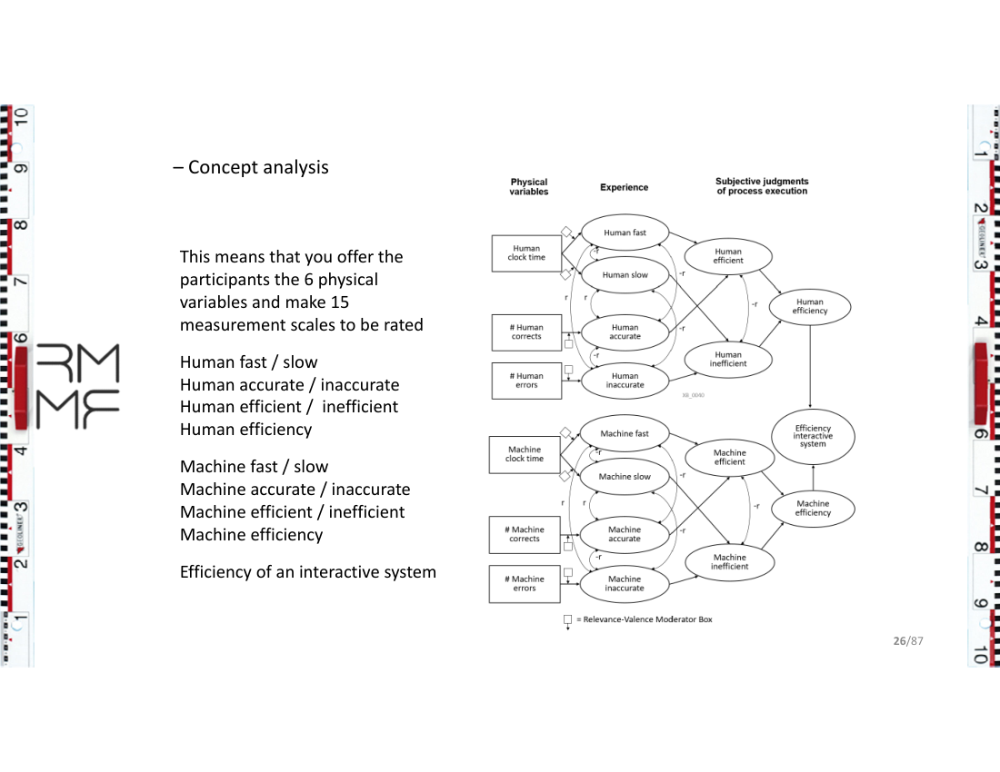
– 概念分析（Concept analysis）
这意味着你需要向被试（participants）提供这 6 个物理变量（physical variables），并制作 15 个供评定的测量量表（measurement scales）
- 交互系统的效率（Efficiency of an interactive system）
- 人类效率（Human efficiency）
- 人类 快 / 慢（Human fast / slow）
- 人类 准确 / 不准确（Human accurate / inaccurate）
- 人类 高效 / 低效（Human efficient / inefficient）
- 机器效率（Machine efficiency）
- 机器 快 / 慢（Machine fast / slow）
- 机器 准确 / 不准确（Machine accurate / inaccurate）
- 机器 高效 / 低效（Machine efficient / inefficient）
英文检索原文（公式与版式请看左侧原图）
– Concept analysis This means that you offer the participants the 6 physical variables and make 15 measurement scales to be rated Human fast / slow Human accurate / inaccurate Human efficient / inefficient Human efficiency Machine fast / slow Machine accurate / inaccurate Machine efficient / inefficient Machine efficiency Efficiency of an interactive system 26/87

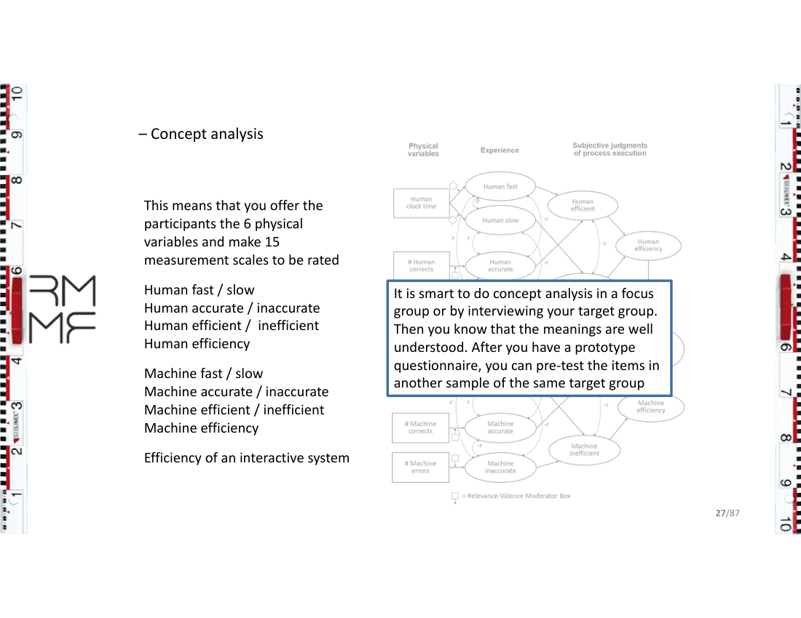
– 概念分析（Concept analysis）
这意味着你需要向被试（participants）提供这 6 个物理变量（physical variables），并制作 15 个供评定的测量量表（measurement scales）
- 交互系统的效率（Efficiency of an interactive system）
- 人类效率（Human efficiency）
- 人类 快 / 慢（Human fast / slow）
- 人类 准确 / 不准确（Human accurate / inaccurate）
- 人类 高效 / 低效（Human efficient / inefficient）
- 机器效率（Machine efficiency）
- 机器 快 / 慢（Machine fast / slow）
- 机器 准确 / 不准确（Machine accurate / inaccurate）
- 机器 高效 / 低效（Machine efficient / inefficient）
在焦点小组（focus group）中或通过访谈（interviewing）你的目标群体（target group）来进行概念分析（concept analysis）是明智的做法。这样你就能确认相关意义已被充分理解。当你有了一版原型问卷（prototype questionnaire）之后，你可以在同一目标群体（target group）的另一个样本（sample）中对这些题项（items）进行预测试（pre-test）。
英文检索原文（公式与版式请看左侧原图）
– Concept analysis This means that you offer the participants the 6 physical variables and make 15 measurement scales to be rated Human fast / slow Human accurate / inaccurate Human efficient / inefficient Human efficiency Machine fast / slow Machine accurate / inaccurate Machine efficient / inefficient Machine efficiency Efficiency of an interactive system It is smart to do concept analysis in a focus group or by interviewing your target group. Then you know that the meanings are well understood. After you have a prototype questionnaire, you can pre-test the items in another sample of the same target group 27/87

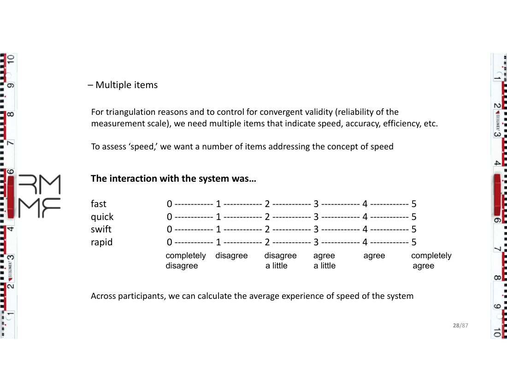
多题项（Multiple items）
出于三角互证（triangulation）的原因，并为了控制聚合效度（convergent validity）（即测量量表（measurement scale）的信度（reliability）），我们需要多题项（multiple items）来指示速度、准确性、效率等。
为了评估“速度”，我们需要若干针对速度这一概念（concept）的题项（items）：
与该系统的交互是……（The interaction with the system was…）
量表刻度：0 完全不同意（completely disagree）— 1 不同意（disagree）— 2 有点不同意（disagree a little）— 3 有点同意（agree a little）— 4 同意（agree）— 5 完全同意（completely agree）
- 快的（fast）：
0 ------------ 1 ------------ 2 ------------ 3 ------------ 4 ------------ 5 - 迅速的（quick）：
0 ------------ 1 ------------ 2 ------------ 3 ------------ 4 ------------ 5 - 敏捷的（swift）：
0 ------------ 1 ------------ 2 ------------ 3 ------------ 4 ------------ 5 - 飞快的（rapid）：
0 ------------ 1 ------------ 2 ------------ 3 ------------ 4 ------------ 5
跨参与者（participants），我们可以计算出对该系统速度的平均（average）体验。
英文检索原文（公式与版式请看左侧原图）
– Multiple items For triangulation reasons and to control for convergent validity (reliability of the measurement scale), we need multiple items that indicate speed, accuracy, efficiency, etc. To assess ‘speed,’ we want a number of items addressing the concept of speed completely disagree disagree agree agree completely disagree a little a little agree The interaction with the system was… fast 0 ------------ 1 ------------ 2 ------------ 3 ------------ 4 ------------ 5 quick 0 ------------ 1 ------------ 2 ------------ 3 ------------ 4 ------------ 5 swift 0 ------------ 1 ------------ 2 ------------ 3 ------------ 4 ------------ 5 rapid 0 ------------ 1 ------------ 2 ------------ 3 ------------ 4 ------------ 5 Across participants, we can calculate the average experience of speed of the system 28/87

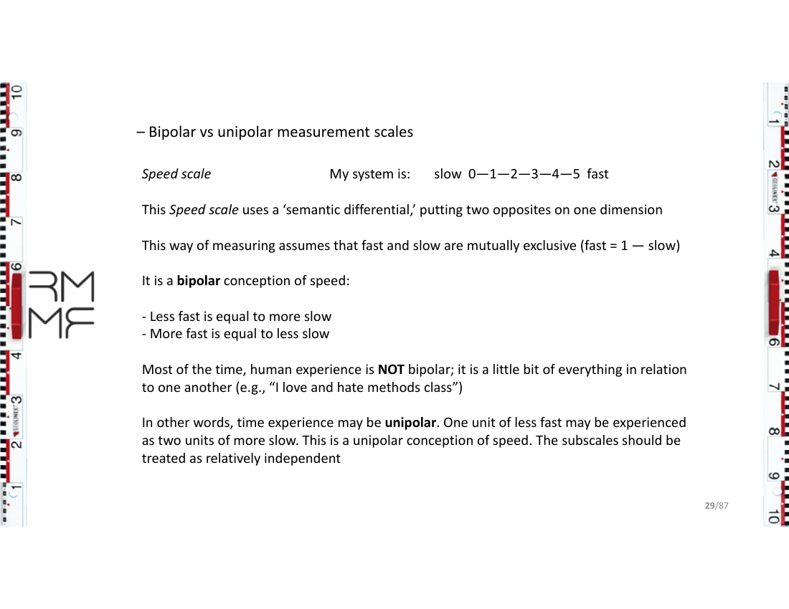
双极（Bipolar） vs 单极测量量表（unipolar measurement scales）
速度量表（scale）（Speed scale）
我的系统是：慢（slow）0—1—2—3—4—5 快（fast）
该速度量表（scale）使用了“语义差异量表（semantic differential）”，将两个对立面放在同一个维度（dimension）上。
这种测量方式假设“快”和“慢”是互斥的（mutually exclusive）（fast = 1 − slow）。
这是一种关于速度的双极（bipolar）构想：
- 没那么快等同于更慢（Less fast is equal to more slow）
- 更快等同于没那么慢（More fast is equal to less slow）
大多数时候，人类体验并不是双极的（bipolar）；而是各种感受相互关联、各有一点（例如：“我对研究方法课又爱又恨”）。
换句话说，时间体验可能是单极的（unipolar）。少一个单位的“快”，在体验上可能相当于多两个单位的“慢”。这是一种关于速度的单极（unipolar）构想。各个分量表（subscales）应当被视为相对独立的（relatively independent）。
英文检索原文（公式与版式请看左侧原图）
– Bipolar vs unipolar measurement scales Speed scale My system is: slow 0—1—2—3—4—5 fast This Speed scale uses a ‘semantic differential,’ putting two opposites on one dimension This way of measuring assumes that fast and slow are mutually exclusive (fast = 1 — slow) It is a bipolar conception of speed: - Less fast is equal to more slow - More fast is equal to less slow Most of the time, human experience is NOT bipolar; it is a little bit of everything in relation to one another (e.g., “I love and hate methods class”) In other words, time experience may be unipolar. One unit of less fast may be experienced as two units of more slow. This is a unipolar conception of speed. The subscales should be treated as relatively independent 29/87

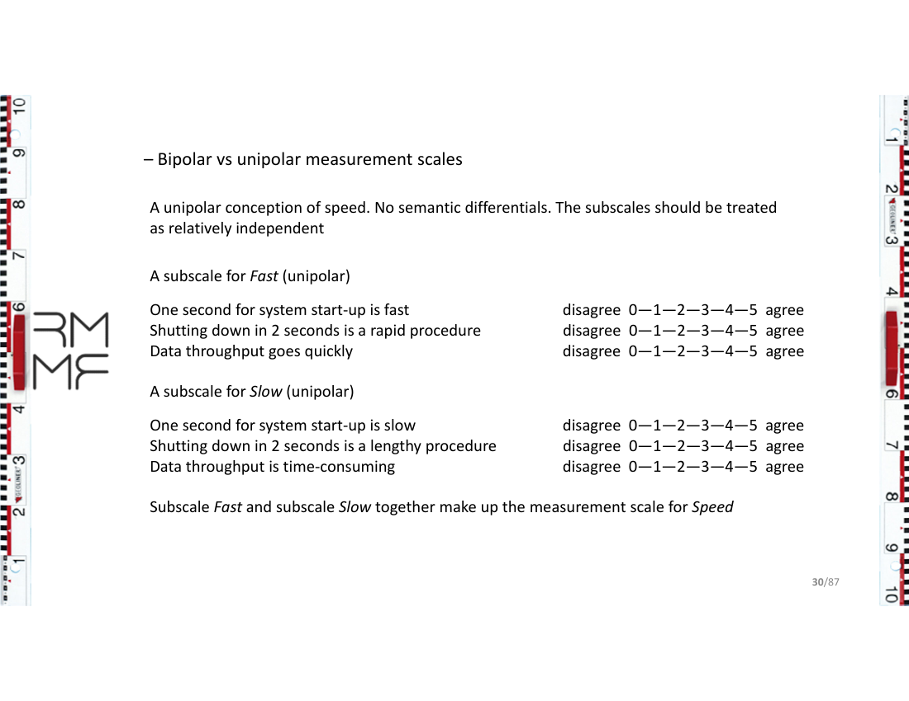
双极（Bipolar） vs 单极测量量表（unipolar measurement scales）
一种关于速度的单极（unipolar）构想。不使用语义差异量表（semantic differentials）。各个分量表（subscales）应当被视为相对独立的（relatively independent）。
“快”的分量表（subscale）（单极（unipolar））
- 系统启动用时 1 秒很快（One second for system start-up is fast）
不同意（disagree）0—1—2—3—4—5 同意（agree）
- 在 2 秒内关机是一个迅速的过程（Shutting down in 2 seconds is a rapid procedure）
不同意（disagree）0—1—2—3—4—5 同意（agree）
- 数据吞吐进展迅速（Data throughput goes quickly）
不同意（disagree）0—1—2—3—4—5 同意（agree）
“慢”的分量表（subscale）（单极（unipolar））
- 系统启动用时 1 秒很慢（One second for system start-up is slow）
不同意（disagree）0—1—2—3—4—5 同意（agree）
- 在 2 秒内关机是一个漫长的过程（Shutting down in 2 seconds is a lengthy procedure）
不同意（disagree）0—1—2—3—4—5 同意（agree）
- 数据吞吐很耗时（Data throughput is time-consuming）
不同意（disagree）0—1—2—3—4—5 同意（agree）
“快”分量表（Subscale）和“慢”分量表（subscale）共同构成了“速度”的测量量表（measurement scale）。
英文检索原文（公式与版式请看左侧原图）
– Bipolar vs unipolar measurement scales A unipolar conception of speed. No semantic differentials. The subscales should be treated as relatively independent A subscale for Fast (unipolar) One second for system start-up is fast disagree 0—1—2—3—4—5 agree Shutting down in 2 seconds is a rapid procedure disagree 0—1—2—3—4—5 agree Data throughput goes quickly disagree 0—1—2—3—4—5 agree A subscale for Slow (unipolar) One second for system start-up is slow disagree 0—1—2—3—4—5 agree Shutting down in 2 seconds is a lengthy procedure disagree 0—1—2—3—4—5 agree Data throughput is time-consuming disagree 0—1—2—3—4—5 agree Subscale Fast and subscale Slow together make up the measurement scale for Speed 30/87

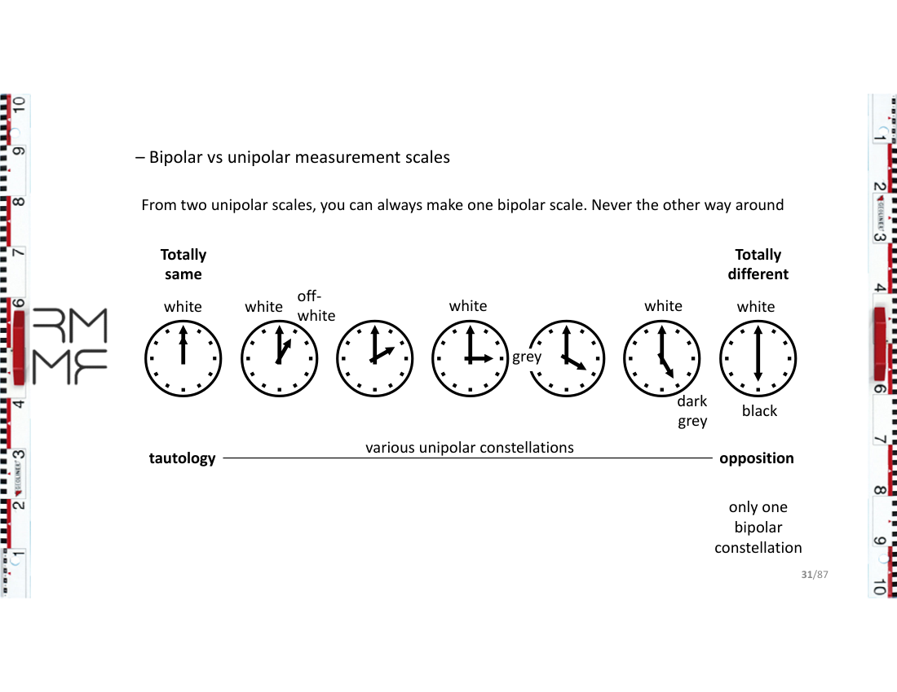
双极（Bipolar） vs 单极测量量表（unipolar measurement scales）
从两个单极量表（unipolar scales）出发，你总是可以构建出一个双极量表（bipolar scale）；反之则永远不行。
- 图示维度范围：从“完全不同”（Totally different）到“完全相同”（Totally same）
- 白色（white）— 黑色（black）：对立（opposition）（仅有一种双极（bipolar）构型 / only one bipolar constellation）
- 白色（white）— 深灰（dark grey）
- 白色（white）— 灰色（grey）
- 白色（white）— 灰白（off-white）
- 白色（white）— 白色（white）：同义反复（tautology）
- 以上多种组合属于：多种单极（unipolar）构型（various unipolar constellations）
英文检索原文（公式与版式请看左侧原图）
– Bipolar vs unipolar measurement scales From two unipolar scales, you can always make one bipolar scale. Never the other way around Totally different Totally same white black white tautology opposition white off- white white dark grey only one bipolar constellation various unipolar constellations white grey 31/87

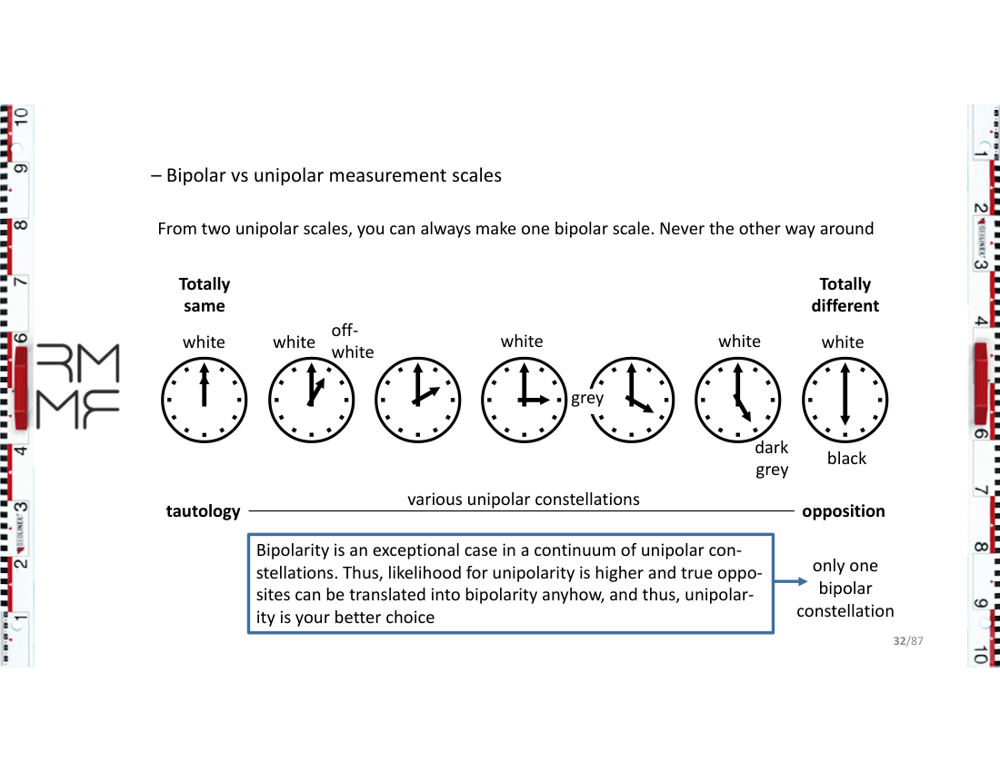
双极（Bipolar） vs 单极测量量表（unipolar measurement scales）
从两个单极量表（unipolar scales）出发，你总是可以构建出一个双极量表（bipolar scale）；反之则永远不行。
- 图示维度范围：从“完全不同”（Totally different）到“完全相同”（Totally same）
- 白色（white）— 黑色（black）：对立（opposition）（仅有一种双极（bipolar）构型 / only one bipolar constellation）
- 白色（white）— 深灰（dark grey）
- 白色（white）— 灰色（grey）
- 白色（white）— 灰白（off-white）
- 白色（white）— 白色（white）：同义反复（tautology）
- 以上多种组合属于：多种单极（unipolar）构型（various unipolar constellations）
双极性（Bipolarity）只是单极（unipolar）构型连续统（continuum）中的一个特例。因此，单极性（unipolarity）出现的可能性（likelihood）更高，而且真正的对立面无论如何都可以转化为双极性（bipolarity），所以单极性（unipolarity）是你更好的选择。
英文检索原文（公式与版式请看左侧原图）
– Bipolar vs unipolar measurement scales From two unipolar scales, you can always make one bipolar scale. Never the other way around Totally different Totally same white black white tautology opposition white off- white white dark grey only one bipolar constellation various unipolar constellations white grey Bipolarity is an exceptional case in a continuum of unipolar con- stellations. Thus, likelihood for unipolarity is higher and true oppo- sites can be translated into bipolarity anyhow, and thus, unipolar- ity is your better choice 32/87

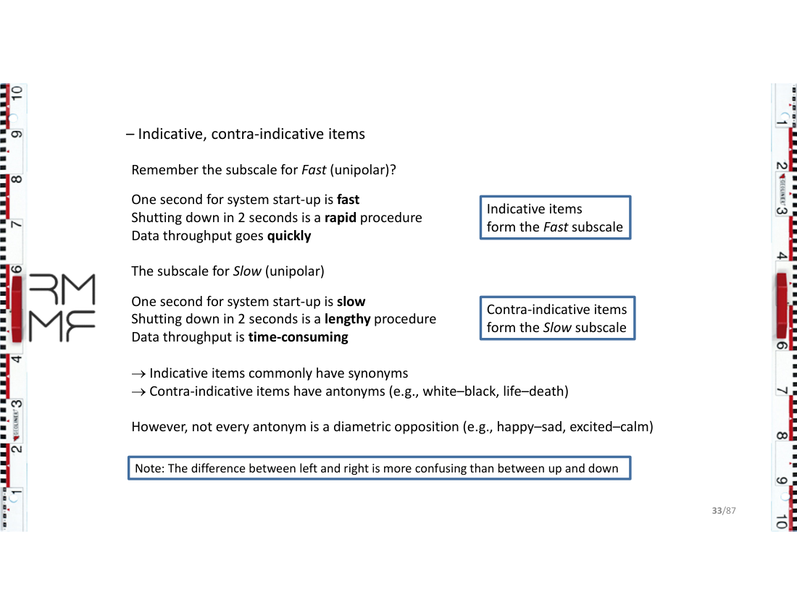
指示题项（Indicative）、反指示题项（contra-indicative items）
还记得“快”的分量表（subscale）（单极（unipolar））吗？
- 系统启动用时 1 秒很快（One second for system start-up is fast）
- 在 2 秒内关机是一个迅速的过程（Shutting down in 2 seconds is a rapid procedure）
- 数据吞吐进展迅速（Data throughput goes quickly）
- 图注：指示题项（Indicative items）构成“快”分量表（subscale）
“慢”的分量表（subscale）（单极（unipolar））
- 系统启动用时 1 秒很慢（One second for system start-up is slow）
- 在 2 秒内关机是一个漫长的过程（Shutting down in 2 seconds is a lengthy procedure）
- 数据吞吐很耗时（Data throughput is time-consuming）
- 图注：反指示题项（Contra-indicative items）构成“慢”分量表（subscale）
- → 指示题项（Indicative items）通常使用同义词（synonyms）
- → 反指示题项（Contra-indicative items）使用反义词（antonyms，例如：白—黑、生—死）
然而，并非每一个反义词都是绝对对立（diametric opposition，例如：开心—悲伤、兴奋—平静）。
注意（Note）：左与右之间的区别比上与下之间的区别更容易令人混淆。
英文检索原文（公式与版式请看左侧原图）
– Indicative, contra-indicative items Remember the subscale for Fast (unipolar)? One second for system start-up is fast Shutting down in 2 seconds is a rapid procedure Data throughput goes quickly The subscale for Slow (unipolar) One second for system start-up is slow Shutting down in 2 seconds is a lengthy procedure Data throughput is time-consuming Indicative items commonly have synonyms Contra-indicative items have antonyms (e.g., white–black, life–death) However, not every antonym is a diametric opposition (e.g., happy–sad, excited–calm) Indicative items form the Fast subscale Contra-indicative items form the Slow subscale Note: The difference between left and right is more confusing than between up and down 33/87

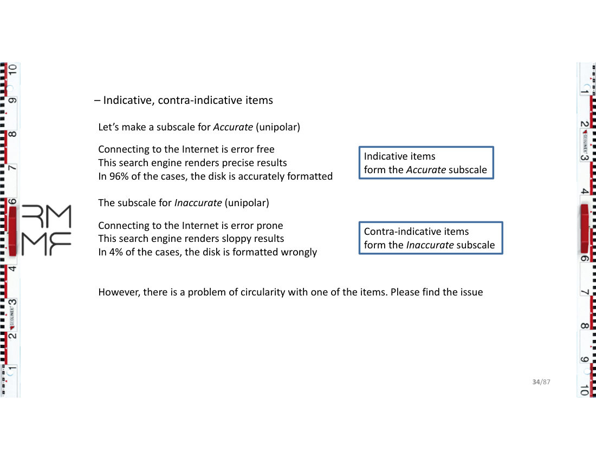
指示题项（Indicative）、反指示题项（contra-indicative items）
让我们来制作一个“准确（Accurate）”的分量表（subscale）（单极（unipolar））
- 连接互联网时零差错（Connecting to the Internet is error free）
- 这个搜索引擎能提供精确的结果（This search engine renders precise results）
- 在 96% 的情况下，磁盘被准确地（accurately）格式化
- 图注：指示题项（Indicative items）构成“准确”分量表（subscale）
“不准确（Inaccurate）”的分量表（subscale）（单极（unipolar））
- 连接互联网时容易出错（Connecting to the Internet is error prone）
- 这个搜索引擎会给出粗疏的结果（This search engine renders sloppy results）
- 在 4% 的情况下，磁盘的格式化方式是错误的（formatted wrongly）
- 图注：反指示题项（Contra-indicative items）构成“不准确”分量表（subscale）
然而，其中一个题项（items）存在循环论证（circularity）问题。请找出这个问题。
英文检索原文（公式与版式请看左侧原图）
– Indicative, contra-indicative items Let’s make a subscale for Accurate (unipolar) Connecting to the Internet is error free This search engine renders precise results In 96% of the cases, the disk is accurately formatted The subscale for Inaccurate (unipolar) Connecting to the Internet is error prone This search engine renders sloppy results In 4% of the cases, the disk is formatted wrongly However, there is a problem of circularity with one of the items. Please find the issue Indicative items form the Accurate subscale Contra-indicative items form the Inaccurate subscale 34/87

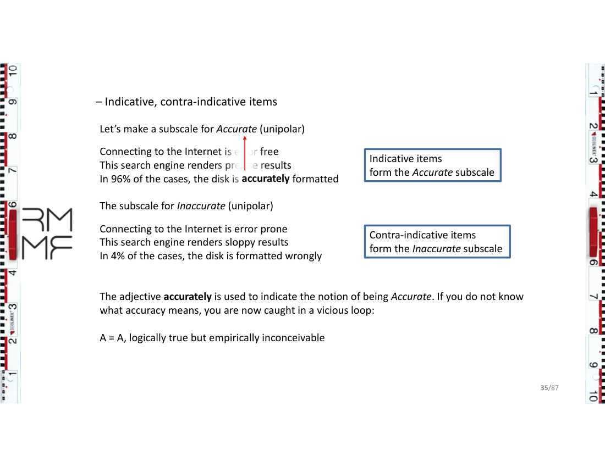
指示题项（Indicative）、反指示题项（contra-indicative items）
让我们来制作一个“准确（Accurate）”的分量表（subscale）（单极（unipolar））
- 连接互联网时零差错（Connecting to the Internet is error free）
- 这个搜索引擎能提供精确的结果（This search engine renders precise results）
- 在 96% 的情况下，磁盘被准确地（accurately）格式化
- 图注：指示题项（Indicative items）构成“准确”分量表（subscale）
“不准确（Inaccurate）”的分量表（subscale）（单极（unipolar））
- 连接互联网时容易出错（Connecting to the Internet is error prone）
- 这个搜索引擎会给出粗疏的结果（This search engine renders sloppy results）
- 在 4% 的情况下，磁盘的格式化方式是错误的（formatted wrongly）
- 图注：反指示题项（Contra-indicative items）构成“不准确”分量表（subscale）
形容词 accurately 被用来指示“准确（Accurate）”这一概念。如果你不知道什么是准确性（accuracy），现在就会陷入一个恶性循环：
A = A，逻辑上为真（logically true）但在经验上不可设想（empirically inconceivable）
英文检索原文（公式与版式请看左侧原图）
– Indicative, contra-indicative items Let’s make a subscale for Accurate (unipolar) Connecting to the Internet is error free This search engine renders precise results In 96% of the cases, the disk is accurately formatted The subscale for Inaccurate (unipolar) Connecting to the Internet is error prone This search engine renders sloppy results In 4% of the cases, the disk is formatted wrongly The adjective accurately is used to indicate the notion of being Accurate. If you do not know what accuracy means, you are now caught in a vicious loop: A = A, logically true but empirically inconceivable Indicative items form the Accurate subscale Contra-indicative items form the Inaccurate subscale Let’s make a subscale for Accurate (unipolar) accurately 35/87

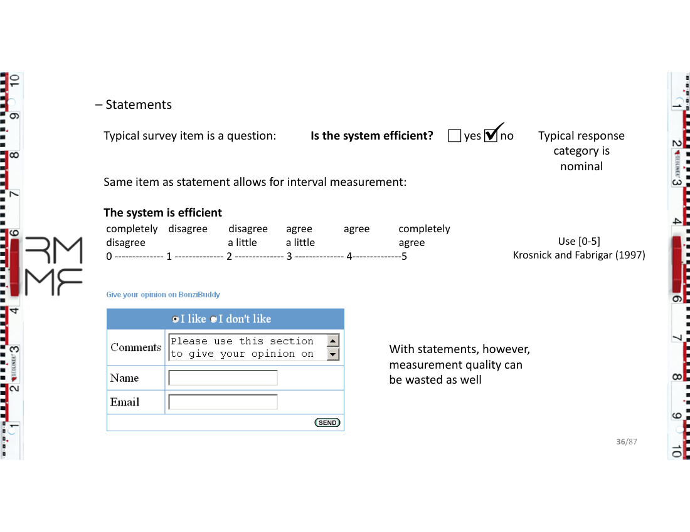
陈述句（Statements）
典型的调查题项（survey item）是一个问句：
- 该系统高效吗？（Is the system efficient?） 是（yes） / 否（no）
- 图注：典型的作答类别（response category）是定类尺度（nominal）的
同一个题项（item）写成陈述句（statement）则允许进行定距测量（interval measurement）：
- 该系统是高效的（The system is efficient）
- 量表刻度：
0完全不同意（completely disagree）—1不同意（disagree）—2有点不同意（disagree a little）—3有点同意（agree a little）—4同意（agree）—5完全同意（completely agree） ✓
然而，使用陈述句（statements）时，测量质量（measurement quality）同样可能被浪费。
- 底部注释：使用 [0-5]；Krosnick and Fabrigar (1997)
英文检索原文（公式与版式请看左侧原图）
– Statements Typical survey item is a question: Is the system efficient? yes no Same item as statement allows for interval measurement: The system is efficient completely disagree disagree agree agree completely disagree a little a little agree 0 -------------- 1 -------------- 2 -------------- 3 -------------- 4--------------5 With statements, however, measurement quality can be wasted as well Typical response category is nominal 36/87 Use [0-5] Krosnick and Fabrigar (1997)

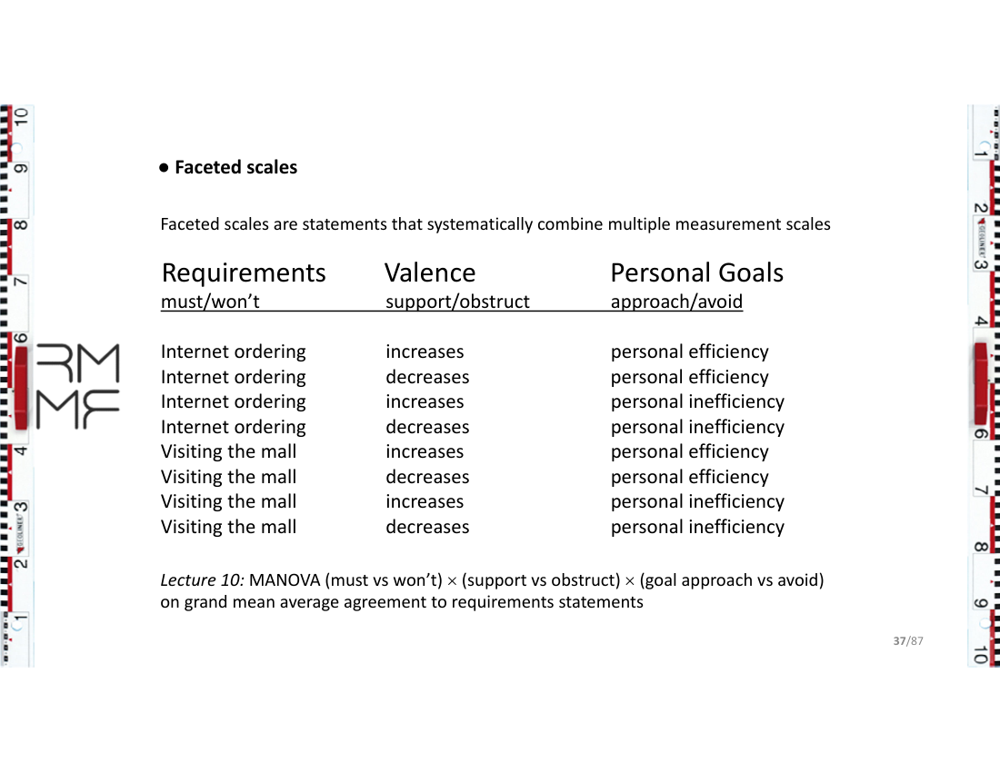
分面量表（Faceted scales）
三个分面维度（顶部标签 / 底部对应概念）：
- 必须 / 不会（must/won’t） → 需求（Requirements）
- 支持 / 阻碍（support/obstruct） → 效价（Valence）
- 趋近（approach） / 回避（avoid） → 个人目标（Personal Goals）
组合出的 8 条陈述句：
- 网上下单（Internet ordering）｜提升（increases）｜个人效率（personal efficiency）
- 网上下单（Internet ordering）｜降低（decreases）｜个人效率（personal efficiency）
- 网上下单（Internet ordering）｜提升（increases）｜个人低效（personal inefficiency）
- 网上下单（Internet ordering）｜降低（decreases）｜个人低效（personal inefficiency）
- 逛商场（Visiting the mall）｜提升（increases）｜个人效率（personal efficiency）
- 逛商场（Visiting the mall）｜降低（decreases）｜个人效率（personal efficiency）
- 逛商场（Visiting the mall）｜提升（increases）｜个人低效（personal inefficiency）
- 逛商场（Visiting the mall）｜降低（decreases）｜个人低效（personal inefficiency）
第 10 讲：针对需求陈述句（statements）的总均值（grand mean）平均同意度进行多元方差分析（MANOVA）（must vs won’t）×（support vs obstruct）×（goal approach vs avoid）
分面量表（Faceted scales）是系统性地组合了多个测量量表（measurement scales）的陈述句（statements）。
英文检索原文（公式与版式请看左侧原图）
●Faceted scales must/won’t support/obstruct approach/avoid Internet ordering increases personal efficiency Internet ordering decreases personal efficiency Internet ordering increases personal inefficiency Internet ordering decreases personal inefficiency Visiting the mall increases personal efficiency Visiting the mall decreases personal efficiency Visiting the mall increases personal inefficiency Visiting the mall decreases personal inefficiency Requirements Valence Personal Goals Lecture 10: MANOVA (must vs won’t) (support vs obstruct) (goal approach vs avoid) on grand mean average agreement to requirements statements Faceted scales are statements that systematically combine multiple measurement scales 37/87

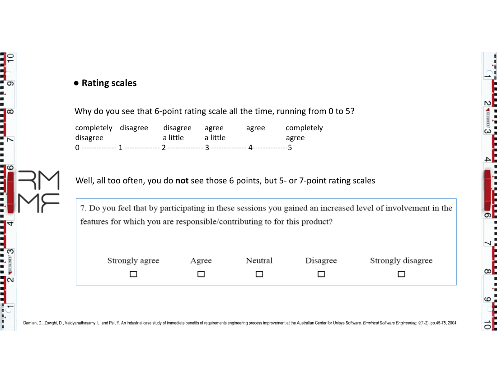
评分量表（Rating scales）
为什么你总是看到那个从 0 到 5 的 6点评分量表（6-point rating scale）？
- 0：完全不同意（completely disagree）
- 1：不同意（disagree）
- 2：有点不同意（disagree a little）
- 3：有点同意（agree a little）
- 4：同意（agree）
- 5：完全同意（completely agree）
哎，很多时候你看到的并不是这 6 个点，而是 5点或7点评分量表（5- or 7-point rating scales）。
Damian, D., Zowghi, D., Vaidyanathasamy, L. and Pal, Y. An industrial case study of immediate benefits of requirements engineering process improvement at the Australian Center for Unisys Software. Empirical Software Engineering, 9(1-2), pp.45-75, 2004
英文检索原文（公式与版式请看左侧原图）
●Rating scales Why do you see that 6-point rating scale all the time, running from 0 to 5? completely disagree disagree agree agree completely disagree a little a little agree 0 -------------- 1 -------------- 2 -------------- 3 -------------- 4--------------5 Well, all too often, you do not see those 6 points, but 5- or 7-point rating scales Damian, D., Zowghi, D., Vaidyanathasamy, L. and Pal, Y. An industrial case study of immediate benefits of requirements engineering process improvement at the Australian Center for Unisys Software. Empirical Software Engineering, 9(1-2), pp.45-75, 2004

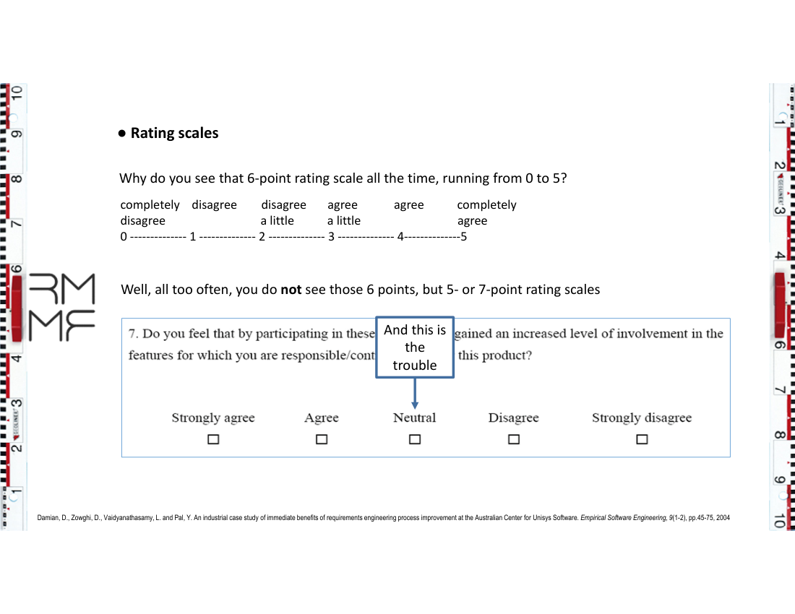
评分量表（Rating scales）
为什么你总是看到那个从 0 到 5 的 6点评分量表（6-point rating scale）？
- 0：完全不同意（completely disagree）
- 1：不同意（disagree）
- 2：有点不同意（disagree a little）
- 3：有点同意（agree a little）
- 4：同意（agree）
- 5：完全同意（completely agree）
哎，很多时候你看到的并不是这 6 个点，而是 5点或7点评分量表（5- or 7-point rating scales）。
- 而问题就在这里（And this is the trouble）
Damian, D., Zowghi, D., Vaidyanathasamy, L. and Pal, Y. An industrial case study of immediate benefits of requirements engineering process improvement at the Australian Center for Unisys Software. Empirical Software Engineering, 9(1-2), pp.45-75, 2004
英文检索原文（公式与版式请看左侧原图）
●Rating scales Why do you see that 6-point rating scale all the time, running from 0 to 5? completely disagree disagree agree agree completely disagree a little a little agree 0 -------------- 1 -------------- 2 -------------- 3 -------------- 4--------------5 Well, all too often, you do not see those 6 points, but 5- or 7-point rating scales Damian, D., Zowghi, D., Vaidyanathasamy, L. and Pal, Y. An industrial case study of immediate benefits of requirements engineering process improvement at the Australian Center for Unisys Software. Empirical Software Engineering, 9(1-2), pp.45-75, 2004 And this is the trouble

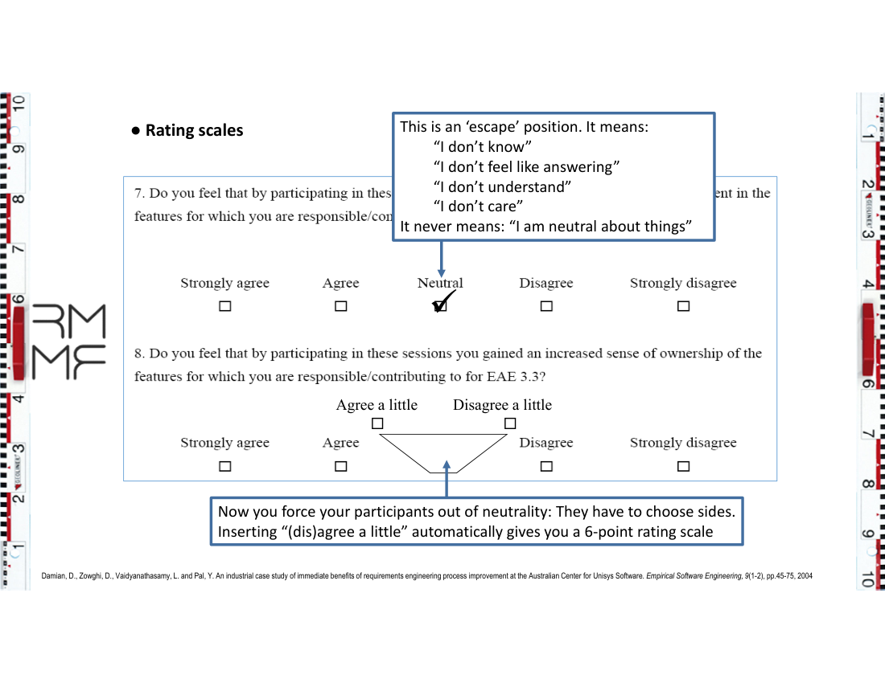
评分量表（Rating scales）
Damian, D., Zowghi, D., Vaidyanathasamy, L. and Pal, Y. An industrial case study of immediate benefits of requirements engineering process improvement at the Australian Center for Unisys Software. Empirical Software Engineering, 9(1-2), pp.45-75, 2004
这是一个逃避选项（‘escape’ position）。它的意思是：
- “我不知道”
- “我不想回答”
- “我不明白”
- “我不在乎”
它从来不表示：“我对这件事持中立（neutral）态度”。
✓ 有点同意（Agree a little） / 有点不同意（Disagree a little）
- 现在你迫使参与者（participants）走出中立立场（neutrality）：他们必须选边站。
- 加入“有点（不）同意”（“(dis)agree a little”）会自动为你形成一个 6点评分量表（6-point rating scale）。
英文检索原文（公式与版式请看左侧原图）
●Rating scales Damian, D., Zowghi, D., Vaidyanathasamy, L. and Pal, Y. An industrial case study of immediate benefits of requirements engineering process improvement at the Australian Center for Unisys Software. Empirical Software Engineering, 9(1-2), pp.45-75, 2004 This is an ‘escape’ position. It means: “I don’t know” “I don’t feel like answering” “I don’t understand” “I don’t care” It never means: “I am neutral about things” Agree a little Disagree a little Now you force your participants out of neutrality: They have to choose sides. Inserting “(dis)agree a little” automatically gives you a 6-point rating scale

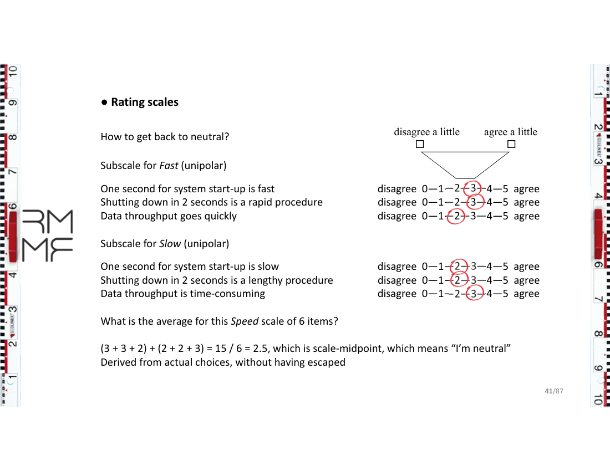
评分量表（Rating scales）
如何回到中立（neutral）？
- “快”（Fast）分量表（Subscale）（单极（unipolar））
- 系统启动耗时 1 秒是快的（One second for system start-up is fast）：不同意 0—1—2—3—4—5 同意
- 在 2 秒内关机是一个迅速的过程（Shutting down in 2 seconds is a rapid procedure）：不同意 0—1—2—3—4—5 同意
- 数据吞吐处理得很快（Data throughput goes quickly）：不同意 0—1—2—3—4—5 同意
- “慢”（Slow）分量表（Subscale）（单极（unipolar））
- 系统启动耗时 1 秒是慢的（One second for system start-up is slow）：不同意 0—1—2—3—4—5 同意
- 在 2 秒内关机是一个漫长的过程（Shutting down in 2 seconds is a lengthy procedure）：不同意 0—1—2—3—4—5 同意
- 数据吞吐很耗时（Data throughput is time-consuming）：不同意 0—1—2—3—4—5 同意
这个包含 6 个题项（items）的“速度”量表（scale）的平均值（average）是多少？
(3 + 3 + 2) + (2 + 2 + 3) = 15 / 6 = 2.5，这就是量表中点（scale-midpoint），表示“我持中立（neutral）态度”- 这一结果源自实际选择，而没有使用逃避选项（有点不同意 disagree a little —— 有点同意 agree a little）
英文检索原文（公式与版式请看左侧原图）
●Rating scales How to get back to neutral? Subscale for Fast (unipolar) One second for system start-up is fast disagree 0—1—2—3—4—5 agree Shutting down in 2 seconds is a rapid procedure disagree 0—1—2—3—4—5 agree Data throughput goes quickly disagree 0—1—2—3—4—5 agree Subscale for Slow (unipolar) One second for system start-up is slow disagree 0—1—2—3—4—5 agree Shutting down in 2 seconds is a lengthy procedure disagree 0—1—2—3—4—5 agree Data throughput is time-consuming disagree 0—1—2—3—4—5 agree What is the average for this Speed scale of 6 items? (3 + 3 + 2) + (2 + 2 + 3) = 15 / 6 = 2.5, which is scale-midpoint, which means “I’m neutral” Derived from actual choices, without having escaped disagree a little agree a little 41/87

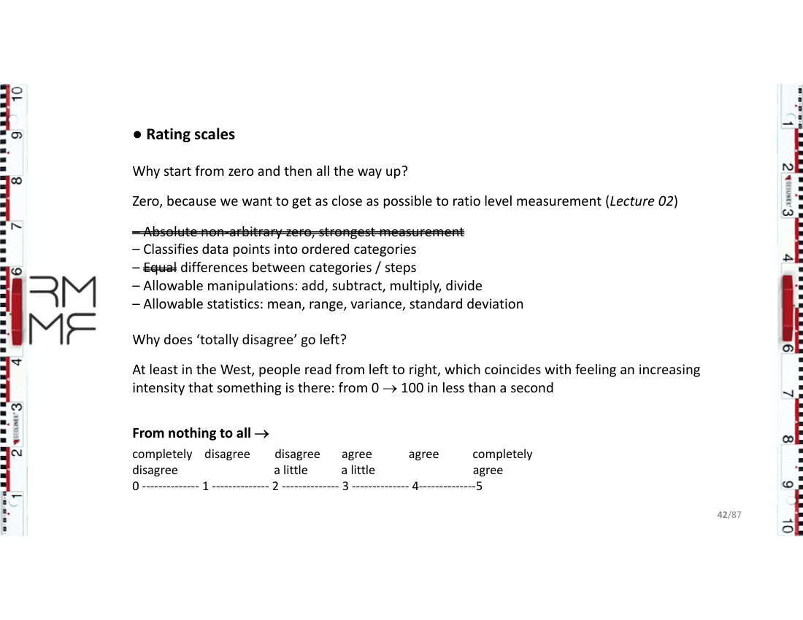
评分量表（Rating scales）
为什么从零开始一路向上递增？
零，是因为我们希望尽可能接近比率水平测量（ratio level measurement）（第 2 讲 Lecture 02）：
- 绝对非任意零点（Absolute non-arbitrary zero），最强的测量（measurement）
- 将数据点（data points）归类为有序类别（ordered categories）
- 类别／步长之间具有等距差异（Equal differences）
- 允许的运算（Allowable manipulations）：加、减、乘、除
- 允许的统计量（Allowable statistics）：均值（mean）、极差（range）、方差（variance）、标准差（standard deviation）
为什么“完全不同意（totally disagree）”放在左边？
- 至少在西方，人们习惯从左向右阅读，这与感知某种事物存在的强度不断增加相吻合：在不到一秒内从 0 → 100。
- 0（完全不同意 completely disagree）— 1（不同意 disagree）— 2（有点不同意 disagree a little）— 3（有点同意 agree a little）— 4（同意 agree）— 5（完全同意 completely agree）
- 从无到全 →（From nothing to all →）
英文检索原文（公式与版式请看左侧原图）
●Rating scales Why start from zero and then all the way up? Zero, because we want to get as close as possible to ratio level measurement (Lecture 02) – Absolute non-arbitrary zero, strongest measurement – Classifies data points into ordered categories – Equal differences between categories / steps – Allowable manipulations: add, subtract, multiply, divide – Allowable statistics: mean, range, variance, standard deviation Why does ‘totally disagree’ go left? At least in the West, people read from left to right, which coincides with feeling an increasing intensity that something is there: from 0 100 in less than a second completely disagree disagree agree agree completely disagree a little a little agree 0 -------------- 1 -------------- 2 -------------- 3 -------------- 4--------------5 From nothing to all 42/87

课间休息（Break）
英文检索原文（公式与版式请看左侧原图）
Break

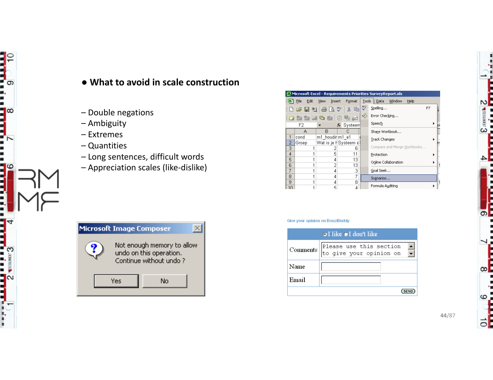
量表构建（scale construction）中应避免的问题
- 双重否定（Double negations）
- 歧义（Ambiguity）
- 极端表述（Extremes）
- 数量词（Quantities）
- 长句子、生僻词（Long sentences, difficult words）
- 喜好评价量表（Appreciation scales）（喜欢—不喜欢 like-dislike）
英文检索原文（公式与版式请看左侧原图）
●What to avoid in scale construction – Double negations – Ambiguity – Extremes – Quantities – Long sentences, difficult words – Appreciation scales (like-dislike) 44/87

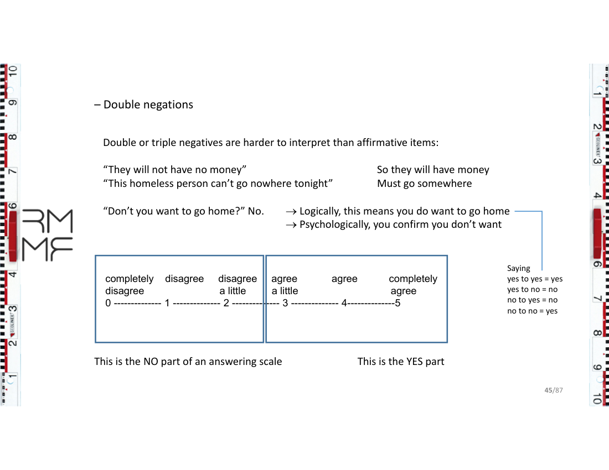
双重否定（Double negations）
双重或三重否定（Double or triple negatives）比肯定题项（affirmative items）更难理解：
- “他们不会没有钱”（“They will not have no money”）
- 所以他们会有钱
- “这个无家可归的人今晚哪儿也不能不去”（“This homeless person can’t go nowhere tonight”）
- 必定要去某个地方
- “难道你不想回家吗？”（“Don’t you want to go home?”） 不（No）。
- → 从逻辑上讲，这表示你确实想回家
- → 从心理上讲，你在确认你不想回家
作答量表（answering scale）结构：
- 0（完全不同意 completely disagree）— 1（不同意 disagree）— 2（有点不同意 disagree a little）| 3（有点同意 agree a little）— 4（同意 agree）— 5（完全同意 completely agree）
- 左侧（0–2）是作答量表（answering scale）的“否（NO）”部分；右侧（3–5）是“是（YES）”部分。
回答逻辑：
- 对“是”说“是” = 是（yes to yes = yes）
- 对“否”说“是” = 否（yes to no = no）
- 对“是”说“否” = 否（no to yes = no）
- 对“否”说“否” = 是（no to no = yes）
英文检索原文（公式与版式请看左侧原图）
– Double negations Double or triple negatives are harder to interpret than affirmative items: “They will not have no money” So they will have money “This homeless person can’t go nowhere tonight” Must go somewhere “Don’t you want to go home?” No. Logically, this means you do want to go home Psychologically, you confirm you don’t want completely disagree disagree agree agree completely disagree a little a little agree 0 -------------- 1 -------------- 2 -------------- 3 -------------- 4--------------5 This is the NO part of an answering scale This is the YES part Saying yes to yes = yes yes to no = no no to yes = no no to no = yes 45/87

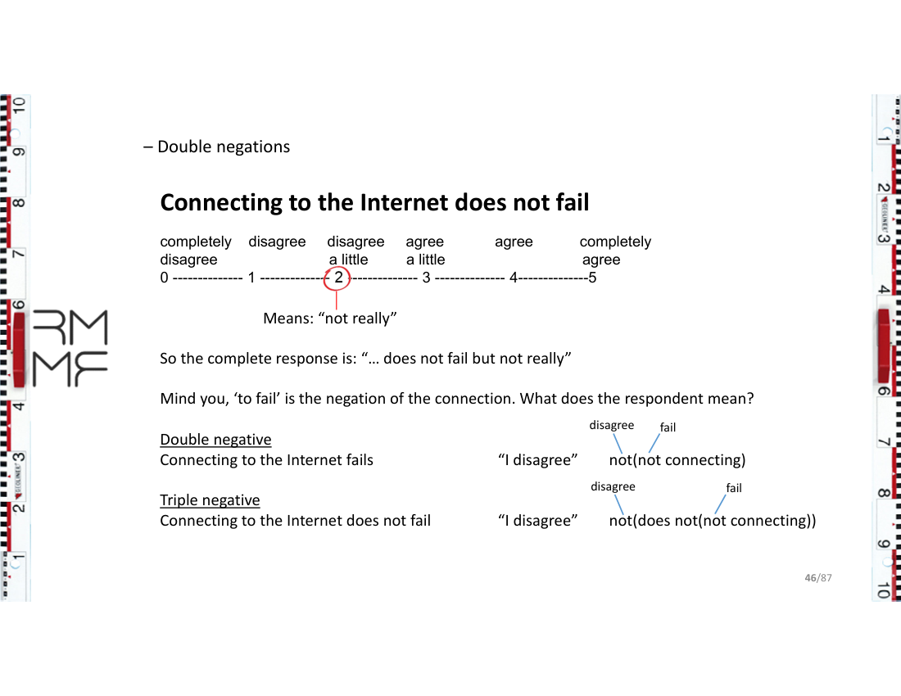
双重否定（Double negations）
示例陈述：连接互联网不会失败（Connecting to the Internet does not fail）
- 0（完全不同意 completely disagree）— 1（不同意 disagree）— 2（有点不同意 disagree a little）— 3（有点同意 agree a little）— 4（同意 agree）— 5（完全同意 completely agree）
- （其中不同意部分）表示：“不尽然”（Means: “not really”）
- 因此完整的回应变成了：“……不会失败，但并不真这样”（“… does not fail but not really”）
请注意，“失败（to fail）”本身就是对“连接（connection）”的否定（negation）。那么受访者（respondent）究竟是什么意思？
- 双重否定（Double negative）
- 连接互联网会失败（Connecting to the Internet fails）
- “我不同意”（“I disagree”，即 disagree + fail）：
not(not connecting)
- 三重否定（Triple negative）
- 连接互联网不会失败（Connecting to the Internet does not fail）
- “我不同意”（“I disagree”，即 disagree + fail）：
not(does not(not connecting))
英文检索原文（公式与版式请看左侧原图）
Connecting to the Internet does not fail completely disagree disagree agree agree completely disagree a little a little agree 0 -------------- 1 -------------- 2 -------------- 3 -------------- 4--------------5 – Double negations Means: “not really” So the complete response is: “… does not fail but not really” Mind you, ‘to fail’ is the negation of the connection. What does the respondent mean? Double negative Connecting to the Internet fails “I disagree” not(not connecting) Triple negative Connecting to the Internet does not fail “I disagree” not(does not(not connecting)) disagree fail disagree fail 46/87

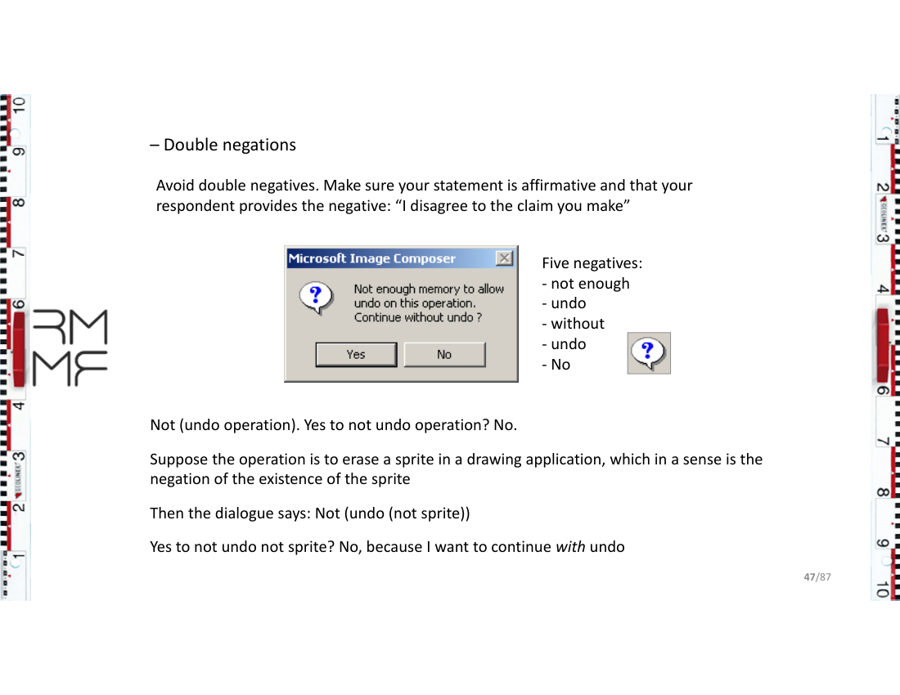
双重否定（Double negations）
避免双重否定（double negatives）。确保你的陈述句是肯定的（affirmative），并由受访者（respondent）提供否定（negative）回答：“我不同意你提出的说法”（“I disagree to the claim you make”）。
五个否定词（Five negatives）：
- 不够 / 未达（not enough）
- 撤销（undo）
- 没有 / 不（without）
- 撤销（undo）
- 否（No）
- 非（撤销操作）（Not (undo operation)）。对“不撤销操作”选“是”吗？选“否”。
- 假设该操作是在绘图应用中擦除一个精灵图（sprite），这在某种意义上是对该精灵图存在的否定（negation）。
- 于是对话框的意思就变成了：非（撤销（非精灵图））（Not (undo (not sprite))）。
- 对“不撤销非精灵图”选“是”吗？选“否”，因为我想继续执行撤销（undo）。
英文检索原文（公式与版式请看左侧原图）
– Double negations Avoid double negatives. Make sure your statement is affirmative and that your respondent provides the negative: “I disagree to the claim you make” Five negatives: - not enough - undo - without - undo - No Not (undo operation). Yes to not undo operation? No. Suppose the operation is to erase a sprite in a drawing application, which in a sense is the negation of the existence of the sprite Then the dialogue says: Not (undo (not sprite)) Yes to not undo not sprite? No, because I want to continue with undo 47/87

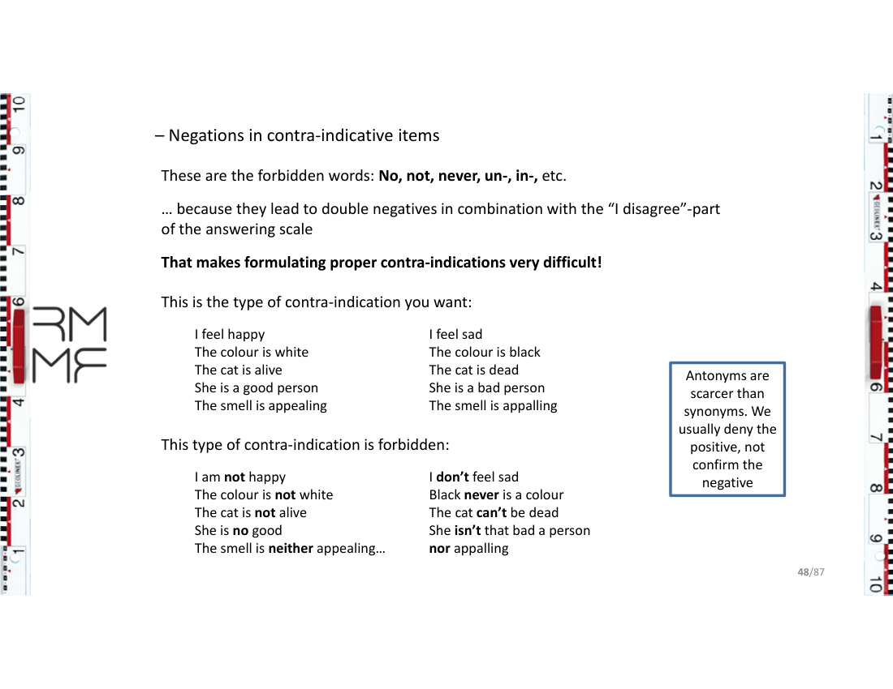
反指示题项（contra-indicative items）中的否定（Negations）
以下是禁用词：No、not、never、un-、in- 等（No, not, never, un-, in-, etc.）。
……因为它们与作答量表（answering scale）中的“我不同意（I disagree）”部分结合时，会导致双重否定（double negatives）。
这使得构建恰当的反指示表述（contra-indications）变得非常困难！
这是你想要的反指示表述（contra-indication）类型：
- 我感到开心（I feel happy） / 我感到悲伤（I feel sad）
- 颜色是白的（The colour is white） / 颜色是黑的（The colour is black）
- 猫是活的（The cat is alive） / 猫是死的（The cat is dead）
- 她是个好人（She is a good person） / 她是个坏人（She is a bad person）
- 气味很迷人（The smell is appealing） / 气味令人作呕（The smell is appalling）
这种类型的反指示表述（contra-indication）是禁止的：
- 我不开心（I am not happy） / 我不感到悲伤（I don’t feel sad）
- 颜色不是白的（The colour is not white） / 黑色绝不是一种颜色（Black never is a colour）
- 猫不是活的（The cat is not alive） / 猫不可能死了（The cat can’t be dead）
- 她不是好人（She is no good） / 她不是那么坏的人（She isn’t that bad a person）
- 气味既不迷人……也不令人作呕（The smell is neither appealing… nor appalling）
说明（Note）：反义词（Antonyms）比同义词（synonyms）更稀缺。我们通常会否定正面事物，而不是去肯定负面事物（We usually deny the positive, not confirm the negative）。
英文检索原文（公式与版式请看左侧原图）
– Negations in contra-indicative items These are the forbidden words: No, not, never, un-, in-, etc. … because they lead to double negatives in combination with the “I disagree”-part of the answering scale That makes formulating proper contra-indications very difficult! This is the type of contra-indication you want: I feel happy I feel sad The colour is white The colour is black The cat is alive The cat is dead She is a good person She is a bad person The smell is appealing The smell is appalling This type of contra-indication is forbidden: I am not happy I don’t feel sad The colour is not white Black never is a colour The cat is not alive The cat can’t be dead She is no good She isn’t that bad a person The smell is neither appealing… nor appalling Antonyms are scarcer than synonyms. We usually deny the positive, not confirm the negative 48/87

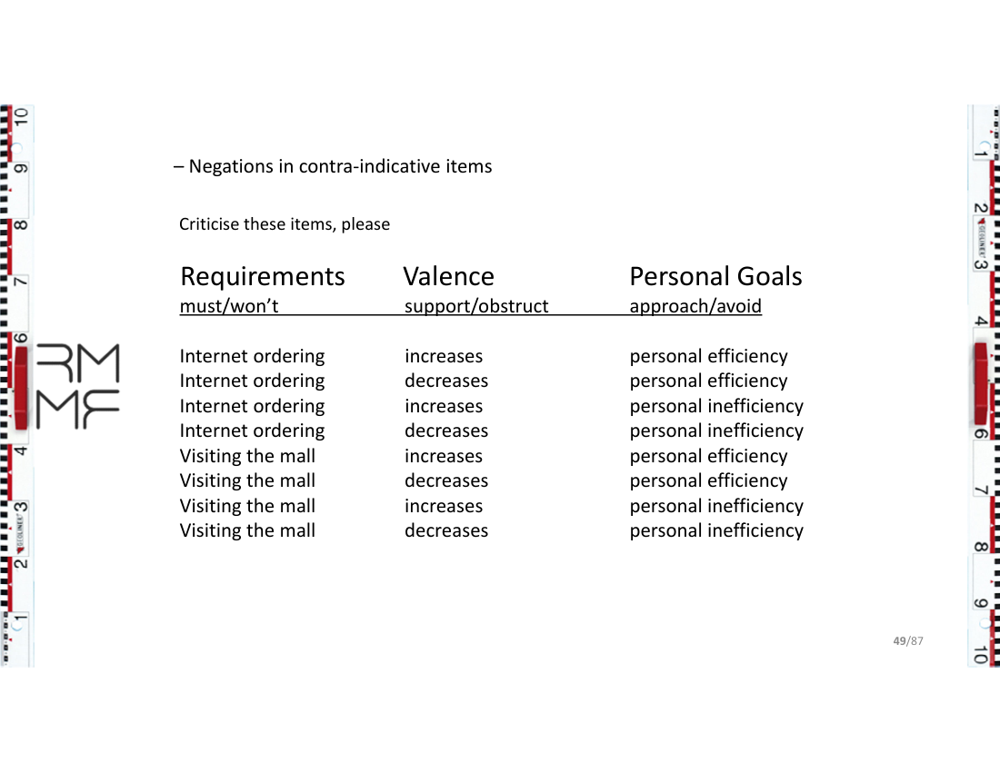
– 反指示题项（contra-indicative items）中的否定（Negations）
请批评点评这些题项（items）
- 需求（Requirements）：必须 / 不会（must / won’t）
- 效价（Valence）：支持 / 阻碍（support / obstruct）
- 个人目标（Personal Goals）：趋近 / 回避（approach / avoid）
测试题项（items）：
- 网上订购提高个人效率（Internet ordering increases personal efficiency）
- 网上订购降低个人效率（Internet ordering decreases personal efficiency）
- 网上订购增加个人无效率（Internet ordering increases personal inefficiency）
- 网上订购降低个人无效率（Internet ordering decreases personal inefficiency）
- 逛商场提高个人效率（Visiting the mall increases personal efficiency）
- 逛商场降低个人效率（Visiting the mall decreases personal efficiency）
- 逛商场增加个人无效率（Visiting the mall increases personal inefficiency）
- 逛商场降低个人无效率（Visiting the mall decreases personal inefficiency）
英文检索原文（公式与版式请看左侧原图）
must/won’t support/obstruct approach/avoid Internet ordering increases personal efficiency Internet ordering decreases personal efficiency Internet ordering increases personal inefficiency Internet ordering decreases personal inefficiency Visiting the mall increases personal efficiency Visiting the mall decreases personal efficiency Visiting the mall increases personal inefficiency Visiting the mall decreases personal inefficiency Requirements Valence Personal Goals Criticise these items, please – Negations in contra-indicative items 49/87

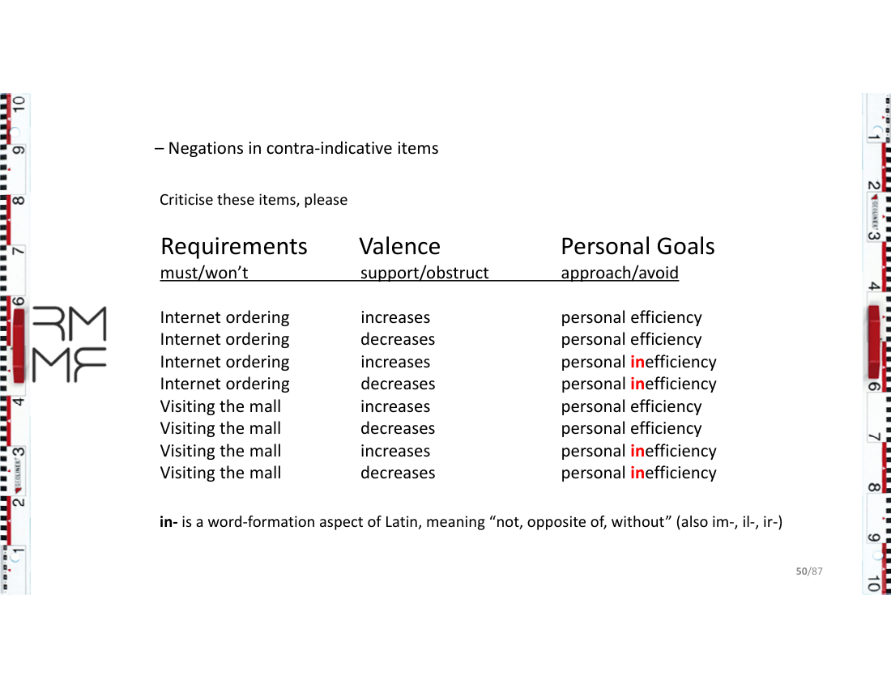
– 反指示题项（contra-indicative items）中的否定（Negations）
请批评点评这些题项（items）
- 需求（Requirements）：必须 / 不会（must / won’t）
- 效价（Valence）：支持 / 阻碍（support / obstruct）
- 个人目标（Personal Goals）：趋近 / 回避（approach / avoid）
测试题项（items）：
- 网上订购提高个人效率（Internet ordering increases personal efficiency）
- 网上订购降低个人效率（Internet ordering decreases personal efficiency）
- 网上订购增加个人无效率（Internet ordering increases personal inefficiency）
- 网上订购降低个人无效率（Internet ordering decreases personal inefficiency）
- 逛商场提高个人效率（Visiting the mall increases personal efficiency）
- 逛商场降低个人效率（Visiting the mall decreases personal efficiency）
- 逛商场增加个人无效率（Visiting the mall increases personal inefficiency）
- 逛商场降低个人无效率（Visiting the mall decreases personal inefficiency）
补充说明：in-是拉丁语中的一个构词要素，意为“不、相反、无”（同类前缀还有im-、il-、ir-）。
英文检索原文（公式与版式请看左侧原图）
must/won’t support/obstruct approach/avoid Internet ordering increases personal efficiency Internet ordering decreases personal efficiency Internet ordering increases personal inefficiency Internet ordering decreases personal inefficiency Visiting the mall increases personal efficiency Visiting the mall decreases personal efficiency Visiting the mall increases personal inefficiency Visiting the mall decreases personal inefficiency Requirements Valence Personal Goals Criticise these items, please – Negations in contra-indicative items in- is a word-formation aspect of Latin, meaning “not, opposite of, without” (also im-, il-, ir-) 50/87

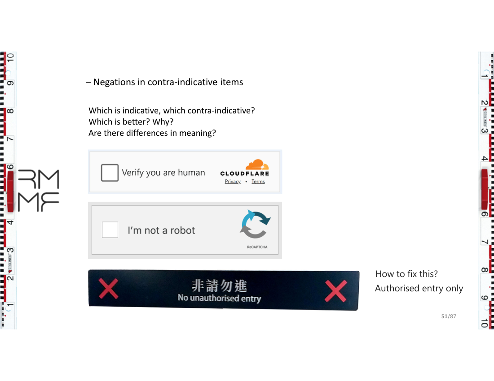
– 反指示题项（contra-indicative items）中的否定（Negations）
- 哪一个是指示性题项（indicative），哪一个是反指示题项（contra-indicative）？
- 哪一个更好？为什么？
- 它们在意义上存在差异吗？
- 如何修正这个问题？
- 仅限授权人员进入（Authorised entry only）
英文检索原文（公式与版式请看左侧原图）
Which is indicative, which contra-indicative? Which is better? Why? Are there differences in meaning? – Negations in contra-indicative items 51/87 How to fix this? Authorised entry only

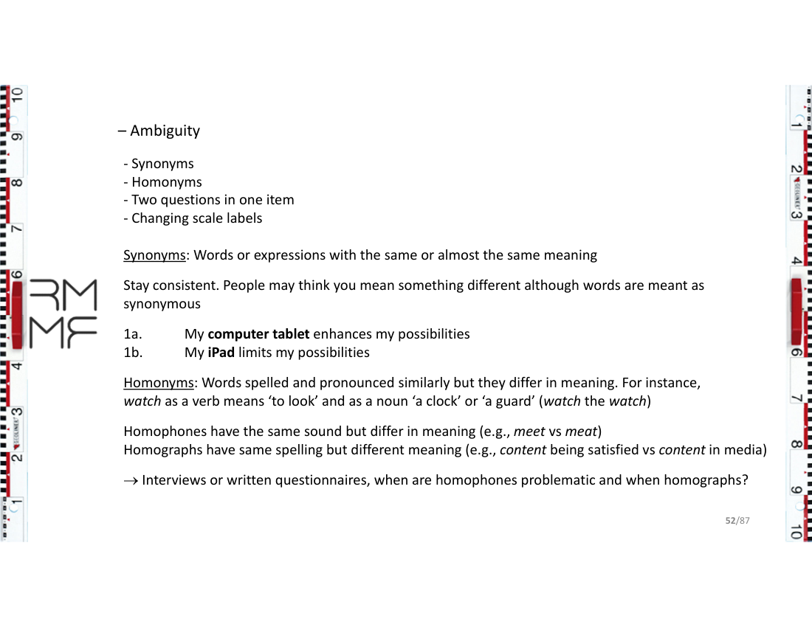
– 歧义（Ambiguity）
- 同义词（Synonyms）
- 同音同形异义词（Homonyms）
- 一题两问（Two questions in one item）
- 更换量表标签（Changing scale labels）
同义词（Synonyms）：具有相同或几乎相同含义的词或表达
保持一致。即使这些词本意是作为同义词使用，人们也可能会以为你想表达的是不同的意思。
1a. 我的平板电脑拓展了我的可能性。
1b. 我的 iPad 限制了我的可能性。
同音同形异义词（Homonyms）：拼写和发音相似但含义不同的词。例如，watch 作动词时意为“观看”，作名词时意为“手表”或“守卫”（watch the watch）。
同音异义词（Homophones）：发音相同但含义不同（例如：meet 与 meat）。
同形异义词（Homographs）：拼写相同但含义不同（例如：表示“满足的” content 与表示“媒体中的内容”的 content）。
→ 在访谈（Interviews）或书面问卷（written questionnaires）中，何时同音异义词（homophones）会成为问题，何时同形异义词（homographs）会成为问题？
英文检索原文（公式与版式请看左侧原图）
– Ambiguity - Synonyms - Homonyms - Two questions in one item - Changing scale labels Synonyms: Words or expressions with the same or almost the same meaning Stay consistent. People may think you mean something different although words are meant as synonymous 1a. My computer tablet enhances my possibilities 1b. My iPad limits my possibilities Homonyms: Words spelled and pronounced similarly but they differ in meaning. For instance, watch as a verb means ‘to look’ and as a noun ‘a clock’ or ‘a guard’ (watch the watch) Homophones have the same sound but differ in meaning (e.g., meet vs meat) Homographs have same spelling but different meaning (e.g., content being satisfied vs content in media) Interviews or written questionnaires, when are homophones problematic and when homographs? 52/87

– 歧义（Ambiguity）
- 同音同形异义词（Homonyms）
- 这些情景（scenarios）帮助我理解了这个系统。（关于可用性测试（usability testing））
- 我 Excel 表格中的方案（scenarios）帮助我理解了这个系统。（关于金融科技（FinTech）；方案功能（Scenarios function））
更好，因为更具体：
*2. 在可用性测试（usability test）中演练的情景（acted-out scenarios）帮助我理解了这个技术系统。
*3. 我 Excel 表格中的“方案”（Scenarios）功能帮助我理解了这个财务系统。
英文检索原文（公式与版式请看左侧原图）
– Ambiguity - Homonyms 2. The scenarios helped me to understand the system 3. The scenarios in my Excel sheet helped me to understand the system Better, because specific: *2. The acted-out scenarios in the usability test helped me to understand the technical system *3. The Scenarios function in my Excel sheet helped me to understand the financial system About usability testing About FinTech Scenarios function 53/87

– 一题两问（Two questions in one item）
Shneiderman, B. (1998). Designing the user interface. Strategies for effective human-computer interaction. Reading, MA: Addison-Wesley, p. 141.
第 9 部分：在线教程（PART 9: On-line Tutorials）
- 9.3.2 信息简明扼要且切中要点（Information was concise and to the point）
- 从不（never）
1 2 3 4 5 6 7 8 9总是（always） ｜ 不适用（NA） - 总是简明扼要（always concise）
- 从不切中要点（never to the point）
- 从不（never）
英文检索原文（公式与版式请看左侧原图）
– Two questions in one item Shneiderman, B. (1998). Designing the user interface. Strategies for effective human-computer interaction. Reading, MA: Addison-Wesley, p. 141. PART 9: On-line Tutorials 9.3.2 Information was concise and to never always the point 1 2 3 4 5 6 7 8 9 NA always concise never to the point 54/87

– 更换量表标签（Changing scale labels）
- 你迫使人们不断进行任务切换（switch tasks），从而导致所谓的“混合成本（mixing costs）”
- 受访者（Respondents）开始关注量表标签（scale labels），而不是你的问题
Shneiderman, B. (1998). Designing the user interface. Strategies for effective human-computer interaction. Reading, MA: Addison-Wesley, p. 141.
第 9 部分：在线教程（PART 9: On-line Tutorials）
- 9.3.2 信息简明扼要且切中要点（Information was concise and to the point）
- 从不（never）
1 2 3 4 5 6 7 8 9总是（always） ｜ 不适用（NA）
- 从不（never）
- 9.4 任务可以完成（Tasks can be completed）
- 困难地（with difficulty）
1 2 3 4 5 6 7 8 9轻松地（easily） ｜ 不适用（NA）
- 困难地（with difficulty）
- 9.4.1 为完成任务所提供的说明（Instructions given for completing tasks）
- 令人困惑的（confusing）
1 2 3 4 5 6 7 8 9清晰的（clear） ｜ 不适用（NA）
- 令人困惑的（confusing）
- 9.4.1 分配用于执行任务的时间（Time given to perform tasks）
- 不充足的（inadequate）
1 2 3 4 5 6 7 8 9充足的（adequate） ｜ 不适用（NA）
- 不充足的（inadequate）
英文检索原文（公式与版式请看左侧原图）
– Changing scale labels You force people to switch tasks all the time, leading to so-called ‘mixing costs’ Respondents start focusing on the scale labels, not on your question Shneiderman, B. (1998). Designing the user interface. Strategies for effective human-computer interaction. Reading, MA: Addison-Wesley, p. 141. PART 9: On-line Tutorials 9.3.2 Information was concise and to never always the point 1 2 3 4 5 6 7 8 9 NA 9.4 Tasks can be completed with difficulty easily 1 2 3 4 5 6 7 8 9 NA 9.4.1 Instructions given for completing confusing clear tasks 1 2 3 4 5 6 7 8 9 NA 9.4.1 Time given to perform tasks inadequate adequate 1 2 3 4 5 6 7 8 9 NA

– 更换量表标签（Changing scale labels）
- 你迫使人们不断进行任务切换（switch tasks），从而导致所谓的“混合成本（mixing costs）”
- 受访者（Respondents）开始关注量表标签（scale labels），而不是你的问题
Shneiderman, B. (1998). Designing the user interface. Strategies for effective human-computer interaction. Reading, MA: Addison-Wesley, p. 141.
第 9 部分：在线教程（PART 9: On-line Tutorials）
- 9.3.2 信息简明扼要且切中要点（Information was concise and to the point）
- 从不（never）
1 2 3 4 5 6 7 8 9总是（always） ｜ 不适用（NA）
- 从不（never）
- 9.4 任务可以完成（Tasks can be completed）
- 困难地（with difficulty）
1 2 3 4 5 6 7 8 9轻松地（easily） ｜ 不适用（NA）
- 困难地（with difficulty）
- 9.4.1 为完成任务所提供的说明（Instructions given for completing tasks）
- 令人困惑的（confusing）
1 2 3 4 5 6 7 8 9清晰的（clear） ｜ 不适用（NA）
- 令人困惑的（confusing）
- 9.4.1 分配用于执行任务的时间（Time given to perform tasks）
- 不充足的（inadequate）
1 2 3 4 5 6 7 8 9充足的（adequate） ｜ 不适用（NA）
- 不充足的（inadequate）
顺便问一下，关于对立词（opposites）是否属于完全对立（diametrical），我们之前学到了什么？
英文检索原文（公式与版式请看左侧原图）
– Changing scale labels You force people to switch tasks all the time, leading to so-called ‘mixing costs’ Respondents start focusing on the scale labels, not on your question Shneiderman, B. (1998). Designing the user interface. Strategies for effective human-computer interaction. Reading, MA: Addison-Wesley, p. 141. PART 9: On-line Tutorials 9.3.2 Information was concise and to never always the point 1 2 3 4 5 6 7 8 9 NA 9.4 Tasks can be completed with difficulty easily 1 2 3 4 5 6 7 8 9 NA 9.4.1 Instructions given for completing confusing clear tasks 1 2 3 4 5 6 7 8 9 NA 9.4.1 Time given to perform tasks inadequate adequate 1 2 3 4 5 6 7 8 9 NA By the way, what did we learn about opposites being diametrical or not?

– 更换量表标签（Changing scale labels）
- 你迫使人们不断进行任务切换（switch tasks），从而导致所谓的“混合成本（mixing costs）”
- 受访者（Respondents）开始关注量表标签（scale labels），而不是你的问题
Shneiderman, B. (1998). Designing the user interface. Strategies for effective human-computer interaction. Reading, MA: Addison-Wesley, p. 141.
第 9 部分：在线教程（PART 9: On-line Tutorials）
- 9.3.2 信息简明扼要且切中要点（Information was concise and to the point）
- 从不（never）
1 2 3 4 5 6 7 8 9总是（always） ｜ 不适用（NA）
- 从不（never）
- 9.4 任务可以完成（Tasks can be completed）
- 困难地（with difficulty）
1 2 3 4 5 6 7 8 9轻松地（easily） ｜ 不适用（NA）
- 困难地（with difficulty）
- 9.4.1 为完成任务所提供的说明（Instructions given for completing tasks）
- 令人困惑的（confusing）
1 2 3 4 5 6 7 8 9清晰的（clear） ｜ 不适用（NA）
- 令人困惑的（confusing）
- 9.4.1 分配用于执行任务的时间（Time given to perform tasks）
- 不充足的（inadequate）
1 2 3 4 5 6 7 8 9充足的（adequate） ｜ 不适用（NA）
- 不充足的（inadequate）
并非每一个反义词（antonym）都是像“从不（never）”对“总是（always）”那样的完全对立（diametric opposition）。
英文检索原文（公式与版式请看左侧原图）
– Changing scale labels You force people to switch tasks all the time, leading to so-called ‘mixing costs’ Respondents start focusing on the scale labels, not on your question Shneiderman, B. (1998). Designing the user interface. Strategies for effective human-computer interaction. Reading, MA: Addison-Wesley, p. 141. PART 9: On-line Tutorials 9.3.2 Information was concise and to never always the point 1 2 3 4 5 6 7 8 9 NA 9.4 Tasks can be completed with difficulty easily 1 2 3 4 5 6 7 8 9 NA 9.4.1 Instructions given for completing confusing clear tasks 1 2 3 4 5 6 7 8 9 NA 9.4.1 Time given to perform tasks inadequate adequate 1 2 3 4 5 6 7 8 9 NA Not every antonym is a diametric opposition like never vs always

– 更换量表标签（Changing scale labels）
- 你迫使人们不断进行任务切换（switch tasks），从而导致所谓的“混合成本（mixing costs）”
- 受访者（Respondents）开始关注量表标签（scale labels），而不是你的问题
Shneiderman, B. (1998). Designing the user interface. Strategies for effective human-computer interaction. Reading, MA: Addison-Wesley, p. 141.
第 9 部分：在线教程（PART 9: On-line Tutorials）
- 9.3.2 信息简明扼要且切中要点（Information was concise and to the point）
- 从不（never）
1 2 3 4 5 6 7 8 9总是（always） ｜ 不适用（NA）
- 从不（never）
- 9.4 任务可以完成（Tasks can be completed）
- 困难地（with difficulty）
1 2 3 4 5 6 7 8 9轻松地（easily） ｜ 不适用（NA）
- 困难地（with difficulty）
- 9.4.1 为完成任务所提供的说明（Instructions given for completing tasks）
- 令人困惑的（confusing）
1 2 3 4 5 6 7 8 9清晰的（clear） ｜ 不适用（NA）
- 令人困惑的（confusing）
- 9.4.1 分配用于执行任务的时间（Time given to perform tasks）
- 不充足的（inadequate）
1 2 3 4 5 6 7 8 9充足的（adequate） ｜ 不适用（NA）
- 不充足的（inadequate）
- 互斥的两极（Mutually exclusive poles）
- 相对排斥的两极（Relatively exclusive poles）
英文检索原文（公式与版式请看左侧原图）
– Changing scale labels You force people to switch tasks all the time, leading to so-called ‘mixing costs’ Respondents start focusing on the scale labels, not on your question Shneiderman, B. (1998). Designing the user interface. Strategies for effective human-computer interaction. Reading, MA: Addison-Wesley, p. 141. PART 9: On-line Tutorials 9.3.2 Information was concise and to never always the point 1 2 3 4 5 6 7 8 9 NA 9.4 Tasks can be completed with difficulty easily 1 2 3 4 5 6 7 8 9 NA 9.4.1 Instructions given for completing confusing clear tasks 1 2 3 4 5 6 7 8 9 NA 9.4.1 Time given to perform tasks inadequate adequate 1 2 3 4 5 6 7 8 9 NA Mutually exclusive poles Relatively exclusive poles

– 更换量表标签（Changing scale labels）
- 你迫使人们不断进行任务切换（switch tasks），从而导致所谓的“混合成本（mixing costs）”
- 受访者（Respondents）开始关注量表标签（scale labels），而不是你的问题
Shneiderman, B. (1998). Designing the user interface. Strategies for effective human-computer interaction. Reading, MA: Addison-Wesley, p. 141.
第 9 部分：在线教程（PART 9: On-line Tutorials）
- 9.3.2 信息简明扼要且切中要点（Information was concise and to the point）
- 从不（never）
1 2 3 4 5 6 7 8 9总是（always） ｜ 不适用（NA）
- 从不（never）
- 9.4 任务可以完成（Tasks can be completed）
- 困难地（with difficulty）
1 2 3 4 5 6 7 8 9轻松地（easily） ｜ 不适用（NA）
- 困难地（with difficulty）
- 9.4.1 为完成任务所提供的说明（Instructions given for completing tasks）
- 令人困惑的（confusing）
1 2 3 4 5 6 7 8 9清晰的（clear） ｜ 不适用（NA）
- 令人困惑的（confusing）
- 9.4.1 分配用于执行任务的时间（Time given to perform tasks）
- 不充足的（inadequate）
1 2 3 4 5 6 7 8 9充足的（adequate） ｜ 不适用（NA）
- 不充足的（inadequate）
核心提醒：不要使用语义差异量表（semantic differentials）！
英文检索原文（公式与版式请看左侧原图）
– Changing scale labels You force people to switch tasks all the time, leading to so-called ‘mixing costs’ Respondents start focusing on the scale labels, not on your question Shneiderman, B. (1998). Designing the user interface. Strategies for effective human-computer interaction. Reading, MA: Addison-Wesley, p. 141. PART 9: On-line Tutorials 9.3.2 Information was concise and to never always the point 1 2 3 4 5 6 7 8 9 NA 9.4 Tasks can be completed with difficulty easily 1 2 3 4 5 6 7 8 9 NA 9.4.1 Instructions given for completing confusing clear tasks 1 2 3 4 5 6 7 8 9 NA 9.4.1 Time given to perform tasks inadequate adequate 1 2 3 4 5 6 7 8 9 NA Do not use semantic differentials!

– 极端词（Extremes）
使用极端措辞（extreme wording）会使结果产生偏差（biases）。大多数人并不会用「糟糕透顶（terrible）」、「极好（wonderful）」、「令人沮丧（frustrating）」和「枯燥乏味（dull）」这类词语来思考。
无意之中，量表（scale）的使用会被局限在中间值（middle values）上（在这里是 4、5、6）。
但话又说回来，「有一点糟糕透顶」？「略微极好」？很难对一个极端表述（extreme）进行程度缓和。
参考文献出处：Shneiderman, B. (1998). Designing the user interface. Strategies for effective human-computer interaction. Reading, MA: Addison-Wesley, p. 136.
- 3.1 对系统的总体反应：
- 糟糕透顶（terrible） — 极好（wonderful）：
1 2 3 4 5 6 7 8 9| 不适用（NA）
- 糟糕透顶（terrible） — 极好（wonderful）：
- 3.2：
- 令人沮丧（frustrating） — 令人满意（satisfying）：
1 2 3 4 5 6 7 8 9| 不适用（NA）
- 令人沮丧（frustrating） — 令人满意（satisfying）：
- 3.3：
- 枯燥乏味（dull） — 振奋人心（stimulating）：
1 2 3 4 5 6 7 8 9| 不适用（NA）
- 枯燥乏味（dull） — 振奋人心（stimulating）：
- 3.4：
- 困难（difficult） — 容易（easy）：
1 2 3 4 5 6 7 8 9| 不适用（NA）
- 困难（difficult） — 容易（easy）：
英文检索原文（公式与版式请看左侧原图）
– Extremes Using extreme wording biases results. Most people do not think in terms of ‘terrible,’ ‘wonderful,’ ‘frustrating,’ and ‘dull’ Unintentionally, scale use will be restricted to the middle values (here, 4 5 6) But then again, a little bit terrible? Slightly wonderful? It is very hard to moderate an extreme Shneiderman, B. (1998). Designing the user interface. Strategies for effective human-computer interaction. Reading, MA: Addison-Wesley, p. 136. 3.1 Overall reactions to the system: terrible wonderful 1 2 3 4 5 6 7 8 9 NA 3.2 frustrating satisfying 1 2 3 4 5 6 7 8 9 NA 3.3 dull stimulating 1 2 3 4 5 6 7 8 9 NA 3.4 difficult easy 1 2 3 4 5 6 7 8 9 NA 60/87

– 极端词（Extremes）
参考文献出处：Shneiderman, B. (1998). Designing the user interface. Strategies for effective human-computer interaction. Reading, MA: Addison-Wesley, p. 136.
尽量将陈述句（statement）表述得中立（neutral），如果受访者（respondents）愿意，让他们自己加上极端程度（extreme）：
- 3.a 总体而言，我认为这个系统还行（Overall, I think the system is okay）
0完全不同意（completely disagree）--------------1不同意（disagree）--------------2有一点不同意（disagree a little）--------------3有一点同意（agree a little）--------------4同意（agree）--------------5完全同意（completely agree）
- 3.b 总体而言，我认为这个系统一般般（Overall, I think the system is so-so）
0完全不同意（completely disagree）--------------1不同意（disagree）--------------2有一点不同意（disagree a little）--------------3有一点同意（agree a little）--------------4同意（agree）--------------5完全同意（completely agree）
尽量将陈述句（statement）表述得中立（neutral），由受访者（respondents）自行决定是否加上极端程度（extreme）：
英文检索原文（公式与版式请看左侧原图）
– Extremes Shneiderman, B. (1998). Designing the user interface. Strategies for effective human-computer interaction. Reading, MA: Addison-Wesley, p. 136. Formulate a statement as neutral as possible and let respondents add the extreme if they please: 3.a Overall, I think the system is okay 3.b Overall, I think the system is so-so completely disagree disagree agree agree completely disagree a little a little agree 0 -------------- 1 -------------- 2 -------------- 3 -------------- 4--------------5 completely disagree disagree agree agree completely disagree a little a little agree 0 -------------- 1 -------------- 2 -------------- 3 -------------- 4--------------5 Formulate a statement as neutral as possible and let respondents add the extreme as they please: 61/87

– 极端词（Extremes）
参考文献出处：Shneiderman, B. (1998). Designing the user interface. Strategies for effective human-computer interaction. Reading, MA: Addison-Wesley, p. 136.
尽量将陈述句（statement）表述得中立（neutral），如果受访者（respondents）愿意，让他们自己加上极端程度（extreme）：
- 3.a 总体而言，我认为这个系统还行（Overall, I think the system is okay）
- （左端叠加标注：糟糕透顶
terrible；右端叠加标注：极好wonderful） 0完全不同意（completely disagree）--------------1不同意（disagree）--------------2有一点不同意（disagree a little）--------------3有一点同意（agree a little）--------------4同意（agree）--------------5完全同意（completely agree）
- （左端叠加标注：糟糕透顶
- 3.b 总体而言，我认为这个系统一般般（Overall, I think the system is so-so）
0完全不同意（completely disagree）--------------1不同意（disagree）--------------2有一点不同意（disagree a little）--------------3有一点同意（agree a little）--------------4同意（agree）--------------5完全同意（completely agree）
尽量将陈述句（statement）表述得中立（neutral），由受访者（respondents）自行决定是否加上极端程度（extreme）：
英文检索原文（公式与版式请看左侧原图）
– Extremes Shneiderman, B. (1998). Designing the user interface. Strategies for effective human-computer interaction. Reading, MA: Addison-Wesley, p. 136. Formulate a statement as neutral as possible and let respondents add the extreme if they please: 3.a Overall, I think the system is okay 3.b Overall, I think the system is so-so wonderful terriblecompletely disagree disagree agree agree completely disagree a little a little agree 0 -------------- 1 -------------- 2 -------------- 3 -------------- 4--------------5 completely disagree disagree agree agree completely disagree a little a little agree 0 -------------- 1 -------------- 2 -------------- 3 -------------- 4--------------5 Formulate a statement as neutral as possible and let respondents add the extreme as they please: 62/87

– 极端词（Extremes）
参考文献出处：Shneiderman, B. (1998). Designing the user interface. Strategies for effective human-computer interaction. Reading, MA: Addison-Wesley, p. 136.
尽量将陈述句（statement）表述得中立（neutral），如果受访者（respondents）愿意，让他们自己加上极端程度（extreme）：
- 3.a 总体而言，我认为这个系统还行（Overall, I think the system is okay）
- （左端叠加标注：糟糕透顶
terrible；右端叠加标注：极好wonderful） 0完全不同意（completely disagree）--------------1不同意（disagree）--------------2有一点不同意（disagree a little）--------------3有一点同意（agree a little）--------------4同意（agree）--------------5完全同意（completely agree）
- （左端叠加标注：糟糕透顶
- 3.b 总体而言，我认为这个系统一般般（Overall, I think the system is so-so）
- （左端叠加标注：糟糕透顶
terrible；右端叠加标注：极好wonderful） 0完全不同意（completely disagree）--------------1不同意（disagree）--------------2有一点不同意（disagree a little）--------------3有一点同意（agree a little）--------------4同意（agree）--------------5完全同意（completely agree）
- （左端叠加标注：糟糕透顶
尽量将陈述句（statement）表述得中立（neutral），由受访者（respondents）自行决定是否加上极端程度（extreme）：
英文检索原文（公式与版式请看左侧原图）
– Extremes Shneiderman, B. (1998). Designing the user interface. Strategies for effective human-computer interaction. Reading, MA: Addison-Wesley, p. 136. Formulate a statement as neutral as possible and let respondents add the extreme if they please: 3.a Overall, I think the system is okay 3.b Overall, I think the system is so-so wonderful terrible wonderful terrible completely disagree disagree agree agree completely disagree a little a little agree 0 -------------- 1 -------------- 2 -------------- 3 -------------- 4--------------5 completely disagree disagree agree agree completely disagree a little a little agree 0 -------------- 1 -------------- 2 -------------- 3 -------------- 4--------------5 Formulate a statement as neutral as possible and let respondents add the extreme as they please: 63/87

– 数量词（Quantities）
很难对一个数量（quantity）进行程度缓和！！
- 完全同意（Totally agree）
- → 是的，选项绝对太多了
- 完全不同意（Totally disagree）
- → 不，绝对不是太多——但它们足够吗？
- 有一点同意（Agree a little）
- → 只是有一点点太多？？有一点点太频繁？有一点点总是（always）或从不（never）？
- → 选项太少了。我有一点不同意选项太少这个说法
第 5 条陈述句（Statement）应当拆分为两条陈述，分别包含正指示题项（indicative）和反指示题项（contra-indicative items）：
- 5 我认为存在太多的选项和特殊情况（I think that there are too many options and special cases）
参考文献出处：Shneiderman, B. (1998). Designing the user interface. Strategies for effective human-computer interaction. Reading, MA: Addison-Wesley, p. 141.
- 5a 我认为选项的数量是充足的（I think that the number of options is sufficient）
- 不同意
0-1-2-3-4-5同意
- 不同意
- 5b 我认为选项的数量是不足的（I think that the number of options is deficient）
- 不同意
0-1-2-3-4-5同意
- 不同意
- 6a 我认为特殊情况的数量是充足的（I think that the number of special cases is sufficient）
- 不同意
0-1-2-3-4-5同意
- 不同意
- 6b 我认为特殊情况的数量是不足的（I think that the number of special cases is deficient）
- 不同意
0-1-2-3-4-5同意
- 不同意
英文检索原文（公式与版式请看左侧原图）
– Quantities It is hard to moderate a quantity!! Totally agree Yes, absolutely too many options Totally disagree No, absolutely not too many but are they enough? Agree a little Just a little bit too many?? A little bit too often? A little bit always or never? There are too little options. I disagree a little that there are too little options Statement 5 should be split into two statements, having indicative and contra-indicative items: 5 I think that there are too many options and special cases Shneiderman, B. (1998). Designing the user interface. Strategies for effective human-computer interaction. Reading, MA: Addison-Wesley, p. 141. 5a I think that the number of options is sufficient disagree 0-1-2-3-4-5 agree 5b I think that the number of options is deficient disagree 0-1-2-3-4-5 agree 6a I think that the number of special cases is sufficient disagree 0-1-2-3-4-5 agree 6b I think that the number of special cases is deficient disagree 0-1-2-3-4-5 agree 64/87

– 数量词（Quantities）
- 我很少用我的笔记本电脑参加局域网联机派对（I seldom use my laptop for a LAN party）
0完全不同意（completely disagree）--------------1不同意（disagree）--------------2有一点不同意（disagree a little）--------------3有一点同意（agree a little）--------------4同意（agree）--------------5完全同意（completely agree）
- 我经常用我的笔记本电脑参加局域网联机派对（I frequently use my laptop for a LAN party）
0完全不同意（completely disagree）--------------1不同意（disagree）--------------2有一点不同意（disagree a little）--------------3有一点同意（agree a little）--------------4同意（agree）--------------5完全同意（completely agree）
有一点「很少」？（a little seldom?）
有一点「经常」？（a little frequently?）
英文检索原文（公式与版式请看左侧原图）
– Quantities I seldom use my laptop for a LAN party completely disagree disagree agree agree completely disagree a little a little agree 0 -------------- 1 -------------- 2 -------------- 3 -------------- 4--------------5 I frequently use my laptop for a LAN party completely disagree disagree agree agree completely disagree a little a little agree 0 -------------- 1 -------------- 2 -------------- 3 -------------- 4--------------5 a little seldom? a little frequently? 65/87

– 长句与难词（Long sentences, difficult words）
参考文献出处：Damian, D., Zowghi, D., Vaidyanathasamy, L. and Pal, Y. An industrial case study of immediate benefits of requirements engineering process improvement at the Australian Center for Unisys Software. Empirical Software Engineering, 9(1-2), pp.45-75, 2004
有人能告诉我这个问题到底在问什么吗？
我必须先做一遍语言学分析（linguistic analysis），才能回答任何东西。
英文检索原文（公式与版式请看左侧原图）
– Long sentences, difficult words Damian, D., Zowghi, D., Vaidyanathasamy, L. and Pal, Y. An industrial case study of immediate benefits of requirements engineering process improvement at the Australian Center for Unisys Software. Empirical Software Engineering, 9(1-2), pp.45-75, 2004 Can somebody tell me what this question is about? I need to do linguistic analysis first before I can answer anything

– 长句与难词（Long sentences, difficult words）
参考文献出处：Damian, D., Zowghi, D., Vaidyanathasamy, L. and Pal, Y. An industrial case study of immediate benefits of requirements engineering process improvement at the Australian Center for Unisys Software. Empirical Software Engineering, 9(1-2), pp.45-75, 2004
- 哪一个？（Which?）
- 这是什么？（What is it?）
- 那是什么？（What is that?）
- 五个句子成分（sentence constituents）实在是太多了
- 我到底要对哪一项作答？是会议（Sessions）、所有权（ownership）、特性（features），还是责任（responsibility）？
核心结论（Lesson learned）：尽量让陈述句（statements）越简单越好。
在参加这些会议之后，我感到……（After the sessions, I felt…）
- 对系统负有责任（responsible for the system）
- 不同意
0-1-2-3-4-5同意
- 不同意
- 对系统拥有所有权／归属感（ownership for the system）
- 不同意
0-1-2-3-4-5同意
- 不同意
- 为系统做出了贡献（contributing to the system）
- 不同意
0-1-2-3-4-5同意
- 不同意
英文检索原文（公式与版式请看左侧原图）
– Long sentences, difficult words Damian, D., Zowghi, D., Vaidyanathasamy, L. and Pal, Y. An industrial case study of immediate benefits of requirements engineering process improvement at the Australian Center for Unisys Software. Empirical Software Engineering, 9(1-2), pp.45-75, 2004 Which? What is it? What is that? Five sentence constituents are far too many What do I respond to? Sessions, ownership, features, responsibility? Lesson learned: Try to make statements as simple as possible After the sessions, I felt… responsible for the system disagree 0-1-2-3-4-5 agree ownership for the system disagree 0-1-2-3-4-5 agree contributing to the system disagree 0-1-2-3-4-5 agree

– 好感度量表（Appreciation scales）（喜欢—不喜欢 / like-dislike）
- 询问好感度（appreciation）、顾客满意度（customer satisfaction）、喜欢（like）或不喜欢（dislike），只会得到缺乏信息量的结果（uninformative results）
- 在 1 到 10 的量表（scale）上，得分（scores）总是徘徊在 7 左右（中等偏正面（moderately positive））
- 这样一来，受访者总是处于安全区，不必真正说出自己的想法
- 因此，好感度量表（appreciation scales）无法将一件事与另一件事区分（differentiate）开来
- 你必须探究造成好感度（Appreciation）、满意度（Satisfaction）等结果的背后维度（dimensions）
- 因此，在测量（measurement）之前必须先进行理论分析（theoretical analysis）
英文检索原文（公式与版式请看左侧原图）
– Appreciation scales (like-dislike) Asking for appreciation, customer satisfaction, like or dislike renders uninformative results On a scale from 1 to 10, scores always linger around 7 (moderately positive) That way, you are always safe and do not really have to say how you think Thus, appreciation scales do not differentiate one event from another You have to query the dimensions that are responsible for Appreciation, Satisfaction, etc. Hence, theoretical analysis before measurement 68/87

– 好感度量表（Appreciation scales）（喜欢—不喜欢 / like-dislike）
询问好感度（appreciation）、顾客满意度（customer satisfaction）、喜欢（like）或不喜欢（dislike），只会得到缺乏信息量的结果（uninformative results）
- 「喜欢—不喜欢（like-dislike）」属于哪种测量水平（level of measurement）？
- 它是一个评定量表（rating scale）吗？
- 在量表构建（scale construction）中，使用「我不喜欢（I don’t like）」是否恰当？
- 文本框（text box）会产生什么数据类型（type of data）？
英文检索原文（公式与版式请看左侧原图）
– Appreciation scales (like-dislike) Asking for appreciation, customer satisfaction, like or dislike renders uninformative results 1. What level of measurement is like-dislike? 2. Is it a rating scale? 3. Is “I don’t like” appropriate in scale construction? 4. What type of data does the text box render? 69/87

– 评价量表（Appreciation scales）（喜欢—不喜欢）
询问评价、顾客满意度、喜欢或不喜欢会得出缺乏信息量的结果。
- “喜欢—不喜欢（like-dislike）”属于哪种测量水平（level of measurement）？
- 它是一个评分量表（rating scale）吗？
- 在量表构建（scale construction）中使用“我不喜欢（I don’t like）”是否合适？
- 文本框会生成哪种数据类型（type of data）？
别忘了再去查看 Lecture 02（理论先于方法（Theory before Methods））中的“测量（Measures）与问题（issues）”部分。
英文检索原文（公式与版式请看左侧原图）
– Appreciation scales (like-dislike) Asking for appreciation, customer satisfaction, like or dislike renders uninformative results 1. What level of measurement is like-dislike? 2. Is it a rating scale? 3. Is “I don’t like” appropriate in scale construction? 4. What type of data does the text box render? Do not forget to check Measures, issues once more in Lecture 02: Theory before Methods 70/87

与该机器人的互动是……（The interaction with the robot was…）
- 愉快的（nice）：0 ------------ 1 ------------ 2 ------------ 3 ------------ 4 ------------ 5
- 良好的（fine）：0 ------------ 1 ------------ 2 ------------ 3 ------------ 4 ------------ 5
- 平庸的（mediocre）：0 ------------ 1 ------------ 2 ------------ 3 ------------ 4 ------------ 5
- 还可以的（okay）：0 ------------ 1 ------------ 2 ------------ 3 ------------ 4 ------------ 5
- 一般的（so-so）：0 ------------ 1 ------------ 2 ------------ 3 ------------ 4 ------------ 5
- 普通的（ordinary）：0 ------------ 1 ------------ 2 ------------ 3 ------------ 4 ------------ 5
量表刻度标签：
0 = 完全不同意（completely disagree） | 1 = 不同意（disagree） | 2 = 有点不同意（disagree a little） | 3 = 有点同意（agree a little） | 4 = 同意（agree） | 5 = 完全同意（completely agree）
总结：构建测量量表（measurement scale）的最佳方式
- 采用引导语开头的李克特式题项（Likert-type items）……
- 后接形容词
- 正指示题项（Indications）与反指示题项（contra-indications）以伪随机（(pseudo)random）方式混合排列
- 6 点评分量表（6-point rating scale），从左侧
0 = 完全不同意（totally disagree）开始
简单、快捷、不会产生误解，聚焦于受访者（respondent）对事物的想法/感受，而非问卷本身的形式方面，且达到尽可能高的测量水平（measurement level）（即等距水平（interval））。
英文检索原文（公式与版式请看左侧原图）
The interaction with the robot was… nice 0 ------------ 1 ------------ 2 ------------ 3 ------------ 4 ------------ 5 fine 0 ------------ 1 ------------ 2 ------------ 3 ------------ 4 ------------ 5 mediocre 0 ------------ 1 ------------ 2 ------------ 3 ------------ 4 ------------ 5 okay 0 ------------ 1 ------------ 2 ------------ 3 ------------ 4 ------------ 5 so-so 0 ------------ 1 ------------ 2 ------------ 3 ------------ 4 ------------ 5 ordinary 0 ------------ 1 ------------ 2 ------------ 3 ------------ 4 ------------ 5 ●In conclusion: Best way to construct a measurement scale completely disagree disagree agree agree completely disagree a little a little agree - Likert-type items that use an introductory line… - Followed by adjectives - Indications and contra-indications (pseudo)randomly mixed - 6-point rating scale, starting on the left from 0 = totally disagree Easy, quick, no misunderstandings, focused on how the respondent thinks / feels about things, not on aspects of the survey itself, highest possible measurement level (i.e., interval) 71/87

- 在 https://www.qualtrics.com/free-account/ 创建你的问卷
- 务必勾选要求受访者（respondents）必须回答当前问题才能继续的选项，否则你会得到大量缺失值（missing values）
- 将题项（items）按模块（blocks）组织，并在模块内进行随机化（randomise），为每位被试（participant）呈现不同的顺序
- 如果询问年龄（Age），让他们填写一个数字（不要使用诸如“18 到 25 岁之间”的年龄区间）。排除 17 岁以下和 99 岁以上的人群
参考链接：https://www.qualtrics.com/support/survey-platform/survey-module/survey-module-overview/
英文检索原文（公式与版式请看左侧原图）
Create your questionnaire in https://www.qualtrics.com/free-account/ Make sure you choose the option that respondents have to answer a question before they can continue, else you will have many missing values Organise items in blocks and randomise them within blocks, a different order for each participant If you ask their Age, let them fill out a number (no age ranges like 'between 18 and 25'). Exclude younger than 17 and older than 99 72/87 https://www.qualtrics.com/support /survey-platform/survey- module/survey-module-overview/

– 量表（Scale）内容与检验
- 使用焦点小组（focus groups）进行前测（Pretest）
- 题项分析（Item analysis）
- 聚合效度（Convergent validity）
- 区分效度（Discriminant validity）
- Lecture 07：
- 克龙巴赫 α（Cronbach’s α）
- 斯皮尔曼-布朗系数（分半）（Spearman-Brown coefficient (split-half)）
- 主成分分析（Principal Component Analysis, PCA）
- 双极量表（Bipolar） vs. 单极量表（unipolar scales）
- 回归（Regression）
- Lecture 08：
- 线性回归（Linear）
- 多元回归（Multiple）
- 中介—调节分析（Mediation-Moderation Analysis）
- Hayes’ PROCESS
- 结构方程建模（Structural Equation Modeling）
- 结构方程建模（SEM）
- AMOS
- 方差分析（Analysis of variance）
- Lecture 10：
- 司徒顿 t 检验（Student’s t）
- 方差分析（ANOVA）、多元方差分析（MANOVA）、多元协方差分析（MANCOVA）
- 一般线性模型（General Linear Model）
- 重复测量（Repeated Measures）
英文检索原文（公式与版式请看左侧原图）
– Scale contents and testing - Pretest with focus groups - Item analysis Convergent validity Discriminant validity - Bipolar vs. unipolar scales - Regression - Structural Equation Modeling - Analysis of variance Lecture 07 Lecture 08 Lecture 10 ●Cronbach’s ●Spearman-Brown coefficient (split-half) ●Principal Component Analysis (PCA) ●Linear ●Multiple ●Mediation-Moderation Analysis Hayes’ PROCESS ●Structural Equation Modeling SEM AMOS ●Student’s t ●ANOVA, MANOVA, MANCOVA ●General Linear Model ●Repeated Measures

▪ 06 期中考试（Midterm，Lecture 01–05）
- 考试样题（Exam sample-items）
- 10 道选择题（Multiple choice, MC）
- 2 道开放式问题（Open-ended questions, OQ）
- 最终成绩计算（Calculation of the end grade）
- (期中 + 期末) / 2（(Midterm + Final) / 2）
- 技术报告（Technical Report）
- 课堂参与与互动（Participation and interaction）
开放式问题示例（类别：“知识（Knowledge）”）
- “喜欢—不喜欢（like-dislike）”属于哪种测量水平（level of measurement）？
- 名义水平（Nominal）。它是归入这一类别或那一类别的分类。
- 它是一个评分量表（rating scale）吗？
- 不是。它没有多个有序等级（multiple ordered steps）。各选项间的距离没有意义。
- 在量表构建（scale construction）中使用“我不喜欢（I don’t like）”是否合适？
- 不合适。为避免歧义和混淆，反指示题项（contra-indications）不应包含诸如
not或don’t之类的否定词。 - 文本框会生成哪种数据类型（type of data）？
英文检索原文（公式与版式请看左侧原图）
06 Midterm (Lecture 01-05) ●Exam sample-items 10 Multiple choice (MC) 2 Open-ended questions (OQ) ●Calculation of the end grade (Midterm + Final) / 2 Technical Report Participation and interaction Example of an Open-ended question (Category “Knowledge”) 1. What level of measurement is like-dislike? 1. Nominal. It is a classification in one or the other category 2. Is it a rating scale? 2. No. It does not have multiple ordered steps. Distances are meaningless 3. Is “I don’t like” appropriate in scale construction? 3. No. To avoid ambiguity and confusion, contra-indications should not have negatives like not or don’t 4. What type of data does the text box render? 74/87

▪ 06 期中考试（Midterm，Lecture 01–05）
- 考试样题（Exam sample-items）
- 10 道选择题（Multiple choice, MC）
- 2 道开放式问题（Open-ended questions, OQ）
- 最终成绩计算（Calculation of the end grade）
- (期中 + 期末) / 2（(Midterm + Final) / 2）
- 技术报告（Technical Report）
- 课堂参与与互动（Participation and interaction）
开放式问题示例（类别：“知识（Knowledge）”）
- “喜欢—不喜欢（like-dislike）”属于哪种测量水平（level of measurement）？
- 名义水平（Nominal）。它是归入这一类别或那一类别的分类。
- 它是一个评分量表（rating scale）吗？
- 不是。它没有多个有序等级（multiple ordered steps）。各选项间的距离没有意义。
- 在量表构建（scale construction）中使用“我不喜欢（I don’t like）”是否合适？
- 不合适。为避免歧义和混淆，反指示题项（contra-indications）不应包含诸如
not或don’t之类的否定词。 - 文本框会生成哪种数据类型（type of data）？
- 质性数据（Qualitative data），它们属于轶事证据（anecdotal evidence），应当经过评分（rated）以进行统计处理（statistical processing）。
英文检索原文（公式与版式请看左侧原图）
06 Midterm (Lecture 01-05) ●Exam sample-items 10 Multiple choice (MC) 2 Open-ended questions (OQ) ●Calculation of the end grade (Midterm + Final) / 2 Technical Report Participation and interaction Example of an Open-ended question (Category “Knowledge”) 1. What level of measurement is like-dislike? 1. Nominal. It is a classification in one or the other category 2. Is it a rating scale? 2. No. It does not have multiple ordered steps. Distances are meaningless 3. Is “I don’t like” appropriate in scale construction? 3. No. To avoid ambiguity and confusion, contra-indications should not have negatives like not or don’t 4. What type of data does the text box render? 4. Qualitative data, which are anecdotal evidence and should be rated for statistical processing 75/87

考试样题（类别：“应用（Application）”）
一位神经学家在其论文中解释道：“大脑之所以那样做，是因为新皮层（neocortex）决定这样做，而新皮层受我们的神经网络（neuronal network）指导，神经网络又受突触（synapses）放电频率控制，突触则通过离子通道（ion shafts）释放可自由移动的亚原子粒子（sub-atomic particles）来运作。”
该神经学家在解释人如何做决策时犯了哪种谬误（fallacy）？
A. 意义与指称混淆（Sense-reference confusion）
B. 肯定前件式（Modus ponens）
C. 循环论证（Circularity）
D. 无穷回归（Infinite regress）
英文检索原文（公式与版式请看左侧原图）
A neurologist explains in his paper that “The brain does that, because the neocortex decides to do so, which is directed by our neuronal network, which is controlled by the firing frequencies of our synapses, working from the ion shafts that release sub-atomic partcles, moving at will.” What fallacy does the neurologist commit in explaining how a person makes decisions? A Sense-reference confusion B Modus ponens C Circularity D Infinite regress Exam Sample-Item (Category “Application”) 76/87

考试样题（类别：“应用（Application）”）
一位神经学家在其论文中解释道：“大脑之所以那样做，是因为新皮层（neocortex）决定这样做，而新皮层受我们的神经网络（neuronal network）指导，神经网络又受突触（synapses）放电频率控制，突触则通过离子通道（ion shafts）释放可自由移动的亚原子粒子（sub-atomic particles）来运作。”
该神经学家在解释人如何做决策时犯了哪种谬误（fallacy）？
A. 意义与指称混淆（Sense-reference confusion）
B. 肯定前件式（Modus ponens）
C. 循环论证（Circularity）
D. 无穷回归（Infinite regress）：用另一些词来解释某些词，却不知道它们确切的经验指称（empirical reference）和/或效度（validity）：人做决定是因为新皮层做决定，新皮层做决定是因为神经网络做决定，神经网络做决定是因为突触做决定，突触做决定是因为粒子做决定——但在这里，究竟什么是决策（decision making）？
英文检索原文（公式与版式请看左侧原图）
A neurologist explains in his paper that “The brain does that, because the neocortex decides to do so, which is directed by our neuronal network, which is controlled by the firing frequencies of our synapses, working from the ion shafts that release sub-atomic partcles, moving at will.” What fallacy does the neurologist commit in explaining how a person makes decisions? A Sense-reference confusion B Modus ponens C Circularity D Infinite regress Exam Sample-Item (Category “Application”) , explaining words from other words without knowing their exact empirical reference and/or validity: The person decides because the neocortex decides because the neurnal network decides, because the synapses decide, because the particles decide, but what is decision making here? 77/87

考试样题（类别：“洞察（Insight）”）
就 Frege（1892）提出的“意义（sense）”与“指称（reference）”概念而言，ChatGPT Turbo 掌握了什么，又没有掌握什么？
A. 它知道意义（sense），但不知道指称（reference）
B. 它对指称（reference）敏感，但不指向意义（sense）
C. 当它指涉某事物时，ChatGPT 有时会言之无理（does not make sense）
D. ChatGPT 不知道自己是如何知道自己所知道的东西的（参见认识论（epistemology））
英文检索原文（公式与版式请看左侧原图）
A It knows sense but not reference B It is sensitive to reference but does not refer to sense C When it refers to something, ChatGPT sometimes does not make sense D ChatGPT does not know how it knows what it knows (cf. epistomology) Exam Sample-Item (Category “Insight”) With regard to Frege’s (1892) notions of ‘sense’ and ‘reference,’ what is it that ChatGPT Turbo does and does not have a command of? 78/87

考试样题（类别：“洞察（Insight）”）
就 Frege（1892）提出的“意义（sense）”与“指称（reference）”概念而言，ChatGPT Turbo 掌握了什么，又没有掌握什么？
A. 它知道意义（sense），但不知道指称（reference）
B. 它对指称（reference）敏感，但不指向意义（sense）
C. 当它指涉某事物时，ChatGPT 有时会言之无理（does not make sense）
D. ChatGPT 不知道自己是如何知道自己所知道的东西的（参见认识论（epistemology））
GPT 复制外在形式（意义（sense）），却并不知道这些词所指为何（它不知道其含义）。它只是在猜测下一个最可能出现的词是什么，只不过它“赌”得非常准。
英文检索原文（公式与版式请看左侧原图）
A It knows sense but not reference B It is sensitive to reference but does not refer to sense C When it refers to something, ChatGPT sometimes does not make sense D ChatGPT does not know how it knows what it knows (cf. epistomology) Exam Sample-Item (Category “Insight”) With regard to Frege’s (1892) notions of ‘sense’ and ‘reference,’ what is it that ChatGPT Turbo does and does not have a command of? GPT copies outer form (sense) without knowing what the words refer to (it does not know meaning). It merely guesses what word is likely to come next but it gambles very well 79/87

考试样题（类别：「洞察」）
一位夜视研究者向若干参与者（participants）展示不同深浅的黑白色，要求他们分别在单极量表（unipolar scale）上评价该刺激物（stimulus）有多接近纯黑和纯白。
- 该刺激物（stimulus）是纯黑色
不同意（disagree） 0—1—2—3—4—5 同意（agree）
- 该刺激物（stimulus）是纯白色
不同意（disagree） 0—1—2—3—4—5 同意（agree）
在结果中，研究者发现深灰色被评为纯黑色（5），并且完全不是白色（0）。基于这一结果，研究者是否被允许将这两个单极量表（unipolar scales）视为一个双极量表（bipolar scale）？
A. 不允许。RGB 值表明深灰色不等于纯黑色。因此，这两个量表应当保持单极（unipolar）。
B. 允许。尽管 RGB 值表明深灰色不等于纯黑色，但在感知上它们被视为相同的，因此在这种情况下，纯白色可以被视为深灰色的真正对立面（true opposite）。
C. 不允许。RGB 值表明深灰色不同于纯黑色。因此，这两个量表不能合并为一个双极量表（bipolar scale）。
D. 允许。不过，下一次研究者也应该纳入一个针对灰色的评分量表（rating scale）。
图示与参数标注：
- 黑色
rgb(0,0,0) - 白色
rgb(255,255,255) - 深灰色
rgb(169,169,169) RGBdark_grey = Perceivedpure_black（深灰色的 RGB 值 = 感知到的纯黑色）
英文检索原文（公式与版式请看左侧原图）
Exam Sample-Item (Category “Insight”) An investigator of night vision presents shades of black and white to a number of participants, who rate how close the stimulus is to pure black and pure white, each measured on a unipolar scale. The stimulus is pure black disagree 0—1—2—3—4—5 agree The stimulus is pure white disagree 0—1—2—3—4—5 agree In the results, the investigator finds that dark grey is rated as pure black (5) and as totally not white (0). Based on this result, is the investigator allowed to treat the two unipolar scales as one bipolar scale? - No. The RGB values show that dark grey is not equal to pure black. Hence, the two scales should remain unipolar - Yes. Although the RGB values show that dark grey is not equal to pure black, perceptually, they are regarded the same and so in this case, pure white can be treated as a true opposite of dark grey - No. The RGB values show that dark grey is different from pure black. Hence, the two scales cannot be combined into one bipolar scale - Yes. Next time, however, the investigator should include a rating scale for grey as well black rgb(0,0,0) white rgb(255,255,255) dark grey rgb(169,169,169) A B C D RGBdark_grey = Perceivedpure_black 80/87

考试样题（类别：「洞察」）
一位夜视研究者向若干参与者（participants）展示不同深浅的黑白色，要求他们分别在单极量表（unipolar scale）上评价该刺激物（stimulus）有多接近纯黑和纯白。
- 该刺激物（stimulus）是纯黑色
不同意（disagree） 0—1—2—3—4—5 同意（agree）
- 该刺激物（stimulus）是纯白色
不同意（disagree） 0—1—2—3—4—5 同意（agree）
在结果中，研究者发现深灰色被评为纯黑色（5），并且完全不是白色（0）。基于这一结果，研究者是否被允许将这两个单极量表（unipolar scales）视为一个双极量表（bipolar scale）？
A. 不允许。RGB 值表明深灰色不等于纯黑色。因此，这两个量表应当保持单极（unipolar）。
B. 允许。尽管 RGB 值表明深灰色不等于纯黑色，但在感知上它们被视为相同的，因此在这种情况下，纯白色可以被视为深灰色的真正对立面（true opposite）。
C. 不允许。RGB 值表明深灰色不同于纯黑色。因此，这两个量表不能合并为一个双极量表（bipolar scale）。
D. 允许。不过，下一次研究者也应该纳入一个针对灰色的评分量表（rating scale）。
图示与参数标注：
- 整个这一区域都被视为纯黑色（This whole area is seen as pure black）
- 黑色（black）
rgb(0,0,0) - 白色（white）
rgb(255,255,255) - 深灰色（dark grey）
rgb(169,169,169) RGBdark_grey = Perceivedpure_black（深灰色的 RGB 值 = 感知到的纯黑色）
英文检索原文（公式与版式请看左侧原图）
An investigator of night vision presents shades of black and white to a number of participants, who rate how close the stimulus is to pure black and pure white, each measured on a unipolar scale. The stimulus is pure black disagree 0—1—2—3—4—5 agree The stimulus is pure white disagree 0—1—2—3—4—5 agree In the results, the investigator finds that dark grey is rated as pure black (5) and as totally not white (0). Based on this result, is the investigator allowed to treat the two unipolar scales as one bipolar scale? - No. The RGB values show that dark grey is not equal to pure black. Hence, the two scales should remain unipolar - Yes. Although the RGB values show that dark grey is not equal to pure black, perceptually, they are regarded the same and so in this case, pure white can be treated as a true opposite of dark grey - No. The RGB values show that dark grey is different from pure black. Hence, the two scales cannot be combined into one bipolar scale - Yes. Next time, however, the investigator should include a rating scale for grey as well A B C D This whole area is seen as pure black black white dark grey Exam Sample-Item (Category “Insight”) black rgb(0,0,0) white rgb(255,255,255) dark grey rgb(169,169,169) RGBdark_grey = Perceivedpure_black

考试样题（类别：「洞察」）
一位夜视研究者向若干参与者（participants）展示不同深浅的黑白色，要求他们分别在单极量表（unipolar scale）上评价该刺激物（stimulus）有多接近纯黑和纯白。
- 该刺激物（stimulus）是纯黑色
不同意（disagree） 0—1—2—3—4—5 同意（agree）
- 该刺激物（stimulus）是纯白色
不同意（disagree） 0—1—2—3—4—5 同意（agree）
在结果中，研究者发现纯黑色被评为深灰色（4），同时完全不是白色（0）。基于这一结果，研究者是否被允许将这两个单极量表（unipolar scales）视为一个双极量表（bipolar scale）？
A. 不允许。RGB 值表明纯黑色不等于深灰色。因此，这两个量表应当保持单极（unipolar）。
B. 允许。尽管 RGB 值表明纯黑色不等于深灰色，但在感知上它们被视为几乎相同，因此在这种情况下，纯白色可以被视为深灰色的真正对立面（true opposite）。
C. 不允许。评分表明纯黑色被「误感知」为深灰色（4），且不被视为与白色完全对立（diametrically opposed）（0）。尽管它们彼此形成对比，但这是两个不应合并为一个双极量表（bipolar scale）的单极量表（unipolar scales）。
D. 允许。不过，下一次研究者也应该纳入一个针对灰色的评分量表（rating scale）。
图示与参数标注：
- 黑色
rgb(0,0,0) - 白色
rgb(255,255,255) - 深灰色
rgb(169,169,169) RGBpure_black = Perceiveddark_grey（纯黑色的 RGB 值 = 感知到的深灰色）
英文检索原文（公式与版式请看左侧原图）
Exam Sample-Item (Category “Insight”) An investigator of night vision presents shades of black and white to a number of participants, who rate how close the stimulus is to pure black and pure white, each measured on a unipolar scale. The stimulus is pure black disagree 0—1—2—3—4—5 agree The stimulus is pure white disagree 0—1—2—3—4—5 agree In the results, the investigator finds that pure black is rated as dark grey (4) as well as totally not white (0). Based on this result, is the investigator allowed to treat the two unipolar scales as one bipolar scale? - No. The RGB values show that pure black is not equal to dark grey. Hence, the two scales should remain unipolar - Yes. Although the RGB values show that pure black is not equal to dark grey, perceptually, they are regarded as almost the same and so in this case, pure white can be treated as a true opposite of dark grey - No. The ratings show that pure black is ‘misperceived’ as dark grey (4) and seen as not diametrically opposed to white (0). Although they are contrasting, these are two unipolar scales that should not be combined into one bipolar scale - Yes. Next time, however, the investigator should include a rating scale for grey as well A B C D black rgb(0,0,0) white rgb(255,255,255) dark grey rgb(169,169,169) RGBpure_black = Perceiveddark_grey 82/87

考试样题（类别：「洞察」）
一位夜视研究者向若干参与者（participants）展示不同深浅的黑白色，要求他们分别在单极量表（unipolar scale）上评价该刺激物（stimulus）有多接近纯黑和纯白。
- 该刺激物（stimulus）是纯黑色
不同意（disagree） 0—1—2—3—4—5 同意（agree）
- 该刺激物（stimulus）是纯白色
不同意（disagree） 0—1—2—3—4—5 同意（agree）
在结果中，研究者发现纯黑色被评为深灰色（4），同时完全不是白色（0）。基于这一结果，研究者是否被允许将这两个单极量表（unipolar scales）视为一个双极量表（bipolar scale）？
A. 不允许。RGB 值表明纯黑色不等于深灰色。因此，这两个量表应当保持单极（unipolar）。
B. 允许。尽管 RGB 值表明纯黑色不等于深灰色，但在感知上它们被视为几乎相同，因此在这种情况下，纯白色可以被视为深灰色的真正对立面（true opposite）。
C. 不允许。评分表明纯黑色被「误感知」为深灰色（4），且不被视为与白色完全对立（diametrically opposed）（0）。尽管它们彼此形成对比，但这是两个不应合并为一个双极量表（bipolar scale）的单极量表（unipolar scales）。
D. 允许。不过，下一次研究者也应该纳入一个针对灰色的评分量表（rating scale）。
图示与参数标注：
- 整个这一区域都被视为深灰色（This whole area is seen as dark grey）
- 黑色（black）
rgb(0,0,0) - 白色（white）
rgb(255,255,255) - 深灰色（dark grey）
rgb(169,169,169) RGBpure_black = Perceiveddark_grey（纯黑色的 RGB 值 = 感知到的深灰色）
英文检索原文（公式与版式请看左侧原图）
Exam Sample-Item (Category “Insight”) An investigator of night vision presents shades of black and white to a number of participants, who rate how close the stimulus is to pure black and pure white, each measured on a unipolar scale. The stimulus is pure black disagree 0—1—2—3—4—5 agree The stimulus is pure white disagree 0—1—2—3—4—5 agree In the results, the investigator finds that pure black is rated as dark grey (4) as well as totally not white (0). Based on this result, is the investigator allowed to treat the two unipolar scales as one bipolar scale? - No. The RGB values show that pure black is not equal to dark grey. Hence, the two scales should remain unipolar - Yes. Although the RGB values show that pure black is not equal to dark grey, perceptually, they are regarded as almost the same and so in this case, pure white can be treated as a true opposite of dark grey - No. The ratings show that pure black is ‘misperceived’ as dark grey (4) and seen as not diametrically opposed to white (0). Although they are contrasting, these are two unipolar scales that should not be combined into one bipolar scale - Yes. Next time, however, the investigator should include a rating scale for grey as well A B C D This whole area is seen as dark grey black white dark grey black rgb(0,0,0) white rgb(255,255,255) dark grey rgb(169,169,169) RGBpure_black = Perceiveddark_grey

总结（Summary）
- 「单题项—单一作答（Single item – one response）」测量的是一个词在弗雷格的意义（Frege’s sense）层面上的含义，但忽略了人们可能赋予的不同含义（弗雷格的指称（Frege’s reference））。每个词都要由另一个词来解释，从而导致无穷回归谬误（fallacy of infinite regress）。
- 我们只能测量意义（sense），但为了同时推断指称（reference），我们尝试采用三角互证（triangulation），定义更多含义应当在此汇聚（converge）的维度（dimensions）。
- 作为三角互证（triangulation）的一种形式，我们学习了如何进行量表构建（scale construction）：
- 先进行概念分析（concept analysis）
- 拟定多题项（multiple items）
- 使用单极测量量表（unipolar measurement scales）（而非双极（bipolar））
- 由指示题项（indicative）与反指示题项（contra-indicative items）组成
- 采用陈述句（statements）的形式
图示人物：Socrates
英文检索原文（公式与版式请看左侧原图）
ummary ‘Single item – one response’ gauges Frege’s sense of a word but ignores the different meanings people may attribute (Frege’s reference). Every word is explained by another word, leading to the fallacy of infinite regress We can only measure sense but to infer the reference as well, we try for triangulation, defining more dimensions on which meanings should converge As a form of triangulation, we learned to do scale construction: – Do concept analysis first – Formulate multiple items – Use unipolar measurement scales (not bipolar) – Consisting of indicative and contra-indicative items – In the form of statements Socrates 84/87

总结（∑ummary）
- 在使用评分量表（rating scales）时，研究者经常会包含一个中立选项（‘neutral’ position），这并不明智，因为受访者（respondents）会将其作为类似不适用（‘not applicable’）的逃避选择。
- 请使用6 点评分量表（6-point rating scales），从 0 到 5 分别表示“完全不同意（totally disagree）”到“完全同意（totally agree）”。对正指示题项（indicative）和反指示题项（contra-indicative items）取平均值，就能显示出参与者（participants）是否持中立态度，即是否落在量表中点（scale midpoint）（= 2.5）。
- 不要使用语义差异量表（semantic differentials），因为反义词并不总是完全截然相反，因此两极（poles）之间的心理距离（psychological distance）并不相同。人们于是不得不一直耗费精力去阅读量表标签（scale labels）。
- 在量表构建（scale construction）过程中，应避免：
- 双重否定（Double negations）
- 歧义（Ambiguity）
- 极端表述（Extremes）
- 数量表述（Quantities）
- 长句、难词
- 好恶评价量表（Appreciation scales）（喜欢—不喜欢 / like-dislike）
Socrates 示例：
- 所有人都会死（All men are mortal）：不同意 0-1-2-3-4-5 同意
- Socrates 是人（Socrates is a man）：不同意 0-1-2-3-4-5 同意
- 因此，Socrates 会死（Thus, Socrates is mortal）：不同意 0-1-2-3-4-5 同意
英文检索原文（公式与版式请看左侧原图）
ummary With rating scales, researchers often include a ‘neutral’ position, which is not smart, because respondents use that as an escape like ‘not applicable’ Use 6-point rating scales, starting from 0 to 5, “totally disagree” to “totally agree,” respectively. Averaging over indicative and contra-indicative items will show whether participants are neutral, hitting scale midpoint (= 2.5) Do not use semantic differentials because opposites are not always diametrical and so the psychological distance between poles differs. People then have to invest effort in reading the scale labels all the time During scale construction, avoid: – Double negations – Ambiguity – Extremes – Quantities – Long sentences, difficult words – Appreciation scales (like-dislike) Socrates All men are mortal disagree 0-1-2-3-4-5 agree Socrates is a man disagree 0-1-2-3-4-5 agree Thus, Socrates is mortal disagree 0-1-2-3-4-5 agree 85/87

总结（∑ummary）
制作调查题项（survey items）的最佳方式：
- 采用带有引导句（introductory line）的李克特式题项（Likert-type items）……
- 后面紧跟形容词
- 正指示题项（Indications）与反指示题项（contra-indications）进行伪随机混合（(pseudo)randomly mixed）
- 使用6 点评分量表（6-point rating scales），最左侧起点为 0 = 完全不同意（totally disagree）
简单、快捷、无误解，聚焦于受访者（respondent）对事物的想法／感受，而非调查问卷本身的各个方面，并且达到最高可能的测量水平（measurement level）（即等距水平（interval））。
示例（Socrates）：
- 方法课是……（Methods class is…）
- 表头：不同意（disagree） — 同意（agree）
- 有趣的（interesting）：0 – 1 – 2 – 3 – 4 – 5
- 吸引人的（engaging）：0 – 1 – 2 – 3 – 4 – 5
- 令人厌倦的（tiresome）：0 – 1 – 2 – 3 – 4 – 5
- 让人投入的（involving）：0 – 1 – 2 – 3 – 4 – 5
- 无聊的（boring）：0 – 1 – 2 – 3 – 4 – 5
英文检索原文（公式与版式请看左侧原图）
ummary Best way to make survey items: - Likert-type items that use an introductory line… - Followed by adjectives - Indications and contra-indications (pseudo)randomly mixed - 6-point rating scales, starting on the left from 0 = totally disagree Easy, quick, no misunderstandings, focused on how the respondent thinks / feels about things, not on aspects of the survey itself, highest possible measurement level (i.e., interval) Methods class is… disagree agree interesting 0 – 1 – 2 – 3 – 4 – 5 engaging 0 – 1 – 2 – 3 – 4 – 5 tiresome 0 – 1 – 2 – 3 – 4 – 5 involving 0 – 1 – 2 – 3 – 4 – 5 boring 0 – 1 – 2 – 3 – 4 – 5 Socrates 86/87

参考文献（References）
- Denzin, N. K. (1970). The research act: A theoretical introduction to sociological methods. New Jersey: Transaction Publishers.
- Dillman, D. A. (1999). Mail and Internet Surveys: The Tailored Design Method. New York: Wiley.
- Frege, G. (1892). Ueber Sinn und Bedeutung [On sense and reference]. Zeitschrift für Philosophie und philosophische Kritik, 100, 25-50.
- Guttman, L. (1954). An outline of some new methodology for social research. Public Opinion Quarterly, 18, 395-404.
- Guttman, L. (1965). A faceted definition of intelligence. Studies in Psychology, 14, 166-181.
- Krosnick, J. A., & Fabrigar, L. R. (1997). Designing rating scales for effective measurement in surveys. In Survey Measurement and Process Quality (pp. 141-164). doi: 10.1002/9781118490013.ch6
英文检索原文（公式与版式请看左侧原图）
Denzin, N. K. (1970). The research act: A theoretical introduction to sociological methods. New Jersey: Transaction Publishers. Dillman, D. A. (1999). Mail and Internet Surveys: The Tailored Design Method. New York: Wiley. Frege, G. (1892). Ueber Sinn und Bedeutung [On sense and reference]. Zeitschrift für Philosophie und philosophische Kritik, 100, 25-50. Guttman, L. (1954). An outline of some new methodology for social research. Public Opinion Quarterly, 18, 395-404. Guttman, L. (1965). A faceted definition of intelligence. Studies in Psychology, 14, 166-181. Krosnick, J. A., & Fabrigar, L. R. (1997). Designing rating scales for effective measurement in surveys. In Survey Measurement and Process Quality (pp. 141-164). doi: 10.1002/9781118490013.ch6 References 87/87